Introduction

The SparkFun DataLogger IoT is a data logger that comes preprogrammed and ready to use immediatly - no programming, no setup - just plug in the board, add a supported qwiic sensor or two and start logging data. The built-in firmware automatically detects attached qwiic sensors, peforms any setup and starts logging sensor data. And with minimal configuration, the DataLogger IoT can connect to a local WiFi network and post data to a wide range of IoT data services.
The DataLogger IoT automatically detects, configures, and logs Qwiic sensors. It was specifically designed for users who just need to capture a lot of data with minimal setup or development. It delivers a ready-to-use device that enables saving data to a microSD card, output it to a serial console andor send it wirelessly to your preferred Internet of Things (IoT) services - all at that same time!
To configure the DataLogger, a menu system is accessed via a serial connection and provides access to all available settings for the system. Changes are automatically saved in persistant storage on the device, and are also settable/accessable as a json file if desired. Details on setting up the system are outlined in the Settings section of this manual.
DataLogger Devices
The following devices support the DataLogger IoT functionality discussed in this document.
- SparkFun DataLogger IoT - the core DataLoggerIoT Device
- SparkFun DataLogger IoT - 9DoF - A DataLoggerIoT with on-board 9DoF (Direction-of-Freedom) sensors.
Quick Start
Overall, the SparkFun DataLoggerIoT is ready for operation and requires no programming or software development. Just plug in a supported sensor and beging logging data to the serial console. With a little additiona setup, data is logged to a variety of common IoT data services as well as to an on-board SD card.
Common items required when using the DataLoggerIoT
For general use and for following the documentation provided, the following items are used:
- A supported SparkFun DataLogger IoT board
- microSD card formatted with FAT32 [COM-15107]
- USB C Cable for communication and power
- A qwiic Cable
- At least one Qwiic enabled devices that is compatible
- For battery powered operation, a Lithium Ion Battery
Basic Hardware Setup
The simple hardware setup is as follows:
- Connect a supported qwiic sensor to the datalogger.
- Connect the datalogger to a computer using a usb-c cable
- Connected to the datalogger via a Serial Terminal
Basic Configuration Setup
Once connected to the DataLoggerIoT using a serial terminal, pressing any key on the keyboard will bring up the menuing system.

To navigate the menu, press the menu item number on your keyboard - this will select the desired menu. So if you want to assess the Settings menu item in the main menu, press the number 1 on your keyboard.
To exit a menu perform on of the following:
- Press the
bkey (back) to return to the previous menu - At the main menu, press
xto exit (bworks also). Any changes to settings are saved to on-board storage - Press the
Escapekey (esc) to return to the previous menu item. If at the main menu, any changes are not save to on-board storage.
Note
If you don't exit a menu, after a timeout period (60 seconds default), the menu will exit as if the escape key was pressed.
Warning
If you make configuration changes, but don't exit the menu to save the changes, the changes will not be saved to on-device storage.
Once menu navigation is understood, explore the options available and make changes to meet your needs. The configuration options are detailed in a majority of this on-line guide.
The Sensors
Straight out of the box anti-static bag, the DataLogger IoT 9DoFis ready to log data from its built-in ISM330DHCX Inertial Measurement Unit (IMU) and MMC5983MA magnetometer. Only want to log magnetometer, accelerometer, gyro or temperature data? Youre good to go! But the fun is only just beginning
The DataLogger IoT is preprogrammed to automatically log data from all of the following sensors, so you may wish to add one or more of these to your shopping cart too. (More sensors are being added all the time and it is really easy to upgrade the DataLogger IoT to support them. But we'll get to that in a moment!). Currently, auto-detection is supported on the following Qwiic-enabled products (with the exception of the ISM330DHCX and MMC5983 which is built-in on the 9DoF variant):
For a list of supported devices based on the firmware, you can check out the list of supported Qwiic Devices in the appendix
Hardware - Overview
In this section, we will highlight the hardware and pins that are broken out on the SparkFun DataLogger IoT. At the time of writing, we highlighted the SparkFun DataLogger IoT - 9DoF. However, this also applies for the SparkFun DataLogger IoT.

DataLogger IoT - 9DoF
The SparkFun DataLogger is pretty much the same with the exception of the following features listed below. We'll include notes highlighting the differences in each section.
- No built - in 6DoF IMU - ISM330DHCX
- No built - in magnetometer - MMC5983
- The addressable RGB LED - WS2812 is replaced with the side emitting addressable RGB LED - B3DQ3BRG
- No IMU INT2 jumper
- No Mag INT jumper
- Included MEAS PTH Jumper
- The "35 / A7" PTH on the edge of the board is replace with a "5" PTH.

DataLogger IoT
ESP32-WROOM Module
The DataLogger IoT is populated with Espressif's ESP32-WROOM-32E module. Espressif's ESP32 WROOM ubiquitous IoT microcontroller is a powerful WiFi, BT, and BLE MCU module that targets a wide variety of applications. For the DataLogger IoT, the firmware currently utilizes the WiFi feature.

ESP32 WROOM Module on the DataLogger
Power
There are a variety of power and power-related nets broken out to connectors and through hole pads. Below list a few methods of powering the board up. There are protection diodes for the USB-C, 5V pin, and single cell LiPo battery. Power is regulated down to 3.3V for the system voltage. Depending on the settings and what is connected to the DataLogger IoT, the board can pull a minimum of 200µA in low power mode by itself.
- USB-C
- 5V Pin
- Single Cell LiPo Battery
- 3V3 Pin
USB-C and 5V
The DataLogger IoT comes equipped with a USB type C socket which you can use to connect it to your computer to view the output and configuration through the serial terminal, or plug in a USB-C power supply. The DataLogger IoT includes the configuration channel resistors needed to tell the power supply to deliver 5V. You can use your USB-C laptop charger as the power source should you need to, even though it normally delivers a much higher voltage.
There is also a 5V power input pin. You can use this to feed in 5V power from an external source. The maximum voltage is 6.0V. The 5V pin is diode-protected and so is the USB-C power input, so it is OK to have both connected at the same time. This pin is ideal if you want to power your DataLogger from regulated solar power or a different type of power supply. You can not use the 5V pin as an output.

DataLogger IoT Power- USB-C and 5v
Voltage from the USB is regulated down to the XC6222 3.3V/700mA voltage regulators for the system voltage and Qwiic-enabled devices. USB power is also connected to the MCP73831 to charge a single cell LiPo battery at a default rate of 500mA.
For customers in North America, our NEMA Raspberry Pi Wall Adapter is a perfect choice. You can power the DataLogger IoT from our USB Battery Pack / Power Bank - TOL-15204 but you will need a USB-C cable too:
- Our USB 2.0 A to C Cable - CAB-15092 will do nicely
- Our USB 3.1 A to C Cable - CAB-14743 is a good choice too
LiPo Battery Input, Charger, and Fuel Gauge
But of course youre going to want to use the DataLogger IoT to log sensor data while on the move too. You can connect one of our standard single cell LiPo batteries to the DataLogger IoT and power it for hours, days or weeks depending on what sensors you have attached and how often you log data.
The DataLogger IoT uses the built-in MCP73831 charger too which will charge your battery at 500mA when USB-C is connected. Please make sure your battery capacity is at least 500mAh (0.5Ah).
The board also includes the MAX17048 LiPo Fuel Gauge which allows you to determine how much power your LiPo battery has available.
The 2-pin JST connector pins are broken out to PTHs on the edge of the board if you decide to solder a single cell LiPo battery directly to the board or power another device.
Battery Polarity
Make sure that you use one of our recommended Lithium Ion batteries. Some batteries use the same JST connector as ours but have theopposite polarity. Connecting one of these to your DataLogger IoT will destroy it. If you are going to use your own battery, it is up to you to ensure it has the correct polarity.

LiPo Charger, Fuel Guage and Battery Connections
3V3 Pins
For those going the old school route, you can also bypass the voltage regulators by soldering directly to the 3V3 and GND pin to provide power if your application has a regulated 3.3V. Note that this is only connected to the system voltage. You will also need to provide power to the 3V3 SWCH or Qwiic-enabled devices should you decide to bypass the voltage regulator.

3.3V Voltage Regulators, PTHs, and Qwiic Connectors
CH340 USB-to-Serial Converter
The top side of the board includes a CH340 USB-to-Serial Converter. The chip can be used to send serial data between the device and computer. You can view the output or configure the device through a serial terminal.

CH340 USB-to-Serial Converter IC
The driver should automatically install on most operating systems. However, there is a wide range of operating systems out there. You may need to install drivers the first time you connect the chip to your computer's USB port or when there are operating system updates. For more information, check out our How to Install CH340 Drivers Tutorial.
UART
The hardware serial UART pins are broken out on the edge of the board. For more information about Serial UART, check out the tutorial about Serial Communication for more information.
- TXD: UART transmit pin. This is connected to pin
16. - RXD: UART receive pin. This is connected to pin
17.

UART Pins Highlighted On The DataLogger IoT
Qwiic
SparkFun's Qwiic Connect System uses 4-pin JST style connectors to quickly interface development boards with I2C sensors and more. No soldering required and there's no need to worry about accidentally swapping the SDA and SCL wires. The Qwiic connector is polarized so you know youll have it wired correctly every time, right from the start. Qwiic boards are daisy chain-able too so you can connect multiple sensors to the DataLogger IoT and log readings from all of them.
Vertical qwiic Connector
You may notice a thin film over the vertial Qwiic connector. This is used by a pick-and-place machine when populating the component on the board before it goes through the reflow oven. Remove this film before using the vertical qwiic connector
The board is populated with vertical and horizontal Qwiic connectors. These are also broken out to PTHs on the edge of the board.

Qwiic Connector And I2C PTH Highlighted
| Pin | Description |
|---|---|
| SCL | I2C clock pin. This is connected to pin 22 and a 2.2kΩ pull-up resistor. |
| SDA | I2C data pin. This is connected to pin 21 and a 2.2kΩ pull-up resistor. |
| 3V3 SW | The 3.3v pin is connected to the XC6222 voltage regulator's output to power the Qwiic devices. |
| GND | Common, ground voltage (0V reference) for the system |
Connected to the line I2C line is the MAX17048 LiPo fuel gauge (7-bit unshifted address = 0x36).
Sometimes you might want to connect more than one of the same type of sensor to the DataLogger IoT. On the I2C bus, each device needs to have a unique address. On many of our boards, there are jumpers links which you can use to change the address and some have addresses that can be configured in software. But there are some where you cannot change the address. Typically, one would use a multiplexor. However, we currently do not have the DataLogger IoT configured to work with any multiplexors (i.e. Qwiic Mux Breakout).
The DataLogger IoT includes a dedicated 3.3V regulator for the Qwiic connector. This has several advantages including:
- The DataLogger IoT can completely power-down the I2C sensors during sleep to prolong your battery life
- Theres no risk of the Qwiic bus gulping too much current and causing problems for the ESP32
SPI
The SPI pins are broken out on the edge of the board. For those that are unfamiliar to PICO and POCI, check out the SPI tutorial for more information.
| Pin | Description |
|---|---|
| SCK | SPI clock pin. This is connect to pin 18. |
| PICO | SPI Peripheral In Controller Out. This is connected to pin 23. |
| POCI | SPI Peripheral Out Controller In. This is connected to pin 19. |

SPI Pins Highlighted
Not shown in the image are the chip select (CS) pins. The 6DoF IMU's CS pin is connected to pin 5. The magnetometer's CS pin is connected to pin 27 which is not broken out.
On the DataLogger IoT, the IMU and magnetometer are not connected to the SPI port since they are not included on the board. Instead of pin "35 / A7" being broken out, pin "5" is broken out on the edge of the board.

Pin 5 Highlighted on the DataLogger IoT
MicroSD Card Socket
The DataLogger IoT supports full 4-bit SDIO for fast logging and uses common microSD cards to record clear text, comma separated files. Flip over the DataLogger IoT and you'll see the latching microSD card socket. You probably already have a microSD card laying around. However, if you need any additional units, we have plenty in the SparkFun catalog. The DataLogger can use any size microSD card and supports FAT32 cards in addition to FAT16. Please ensure that your SD card is formatted correctly; we recommend the Raspberry Pi Imager Tool.

MicroSD Card
Slide in your formatted SD card and it will click neatly into place. The edge of the SD card will stick out on the edge of the circuit board when it is inserted correctly.
You should only insert or remove the SD card while the power is turned off or disconnected. Removing the card while the DataLogger IoT is logging will almost certainly corrupt your data.
DataLogger IoT - 9DoF (9 Degrees of Freedom)
As stated earlier, included on every DataLogger IoT - 9DoF is a 6DoF Inertial Measurement Unit (IMU) for built-in logging of triple-axis accelerometer and gyro. There is also a built-in triple-axis magnetometer for a complete 9 degrees of freedom. Beside each IC is a silkcreen showing the reference axis. Both are connected to the ESP32 via the SPI port. Combined, you have 9 degrees of inertial measurement! Whereas the original 9DOF Razor used the old MPU-9250, this uses the ISM330DHCX and MMC5983MA. Oh, and if that wasnt enough, it comes with a built-in temperature sensor on each IC too. So if you want to use the DataLogger IoT as a transportation logger, it will do that straight out of the anti-static bag!

DataLogger IoT - 9DOF - Accelerometer, Gyro, and Magnetometer
Analog Pins
There are three 12-bit analog pins available and broken out on edge of the board.
| Pin | Description |
|---|---|
| 36 / A0 | Analog A0. This is connected to pin 36. |
| 39 / A3 | Analog A3. This is connected to pin 39. |
| 35 / A7 | Analog A7. This is connected to pin 35. |

Analog Pins Highlighted
Reset and Boot Buttons
There are two buttons available on the board for reset and boot. These are also broken out on the edge of the board as PTHs. If you have your DataLogger IoT mounted in an enclosure, you can also attach an external boot or reset switch too. Any Single Pole Normally-Open Push-To-Close momentary switch will do. Solder pin headers or wires to the RST and GND breakout pins and connect your external switch to those.
| Button | Description |
|---|---|
| RESET | Pressing this button will pull the pin LOW and reset the program running on the ESP32 without unplugging the board. |
| BOOT | The boot button usually allows users to force the ESP32 into bootloader mode to manually flash new firmware to the ESP32. The ESP32 will remain in this mode until there is a power cycle or the reset button is pressed. As of firmware v01.00.02, this button has an extra function: pressing down on the user button for 20 seconds will erase on-board preference storage and restart the board. This is connected to pin 0 on the ESP32. |

Reset and Boot Buttons (and Associated PTHs) Highlighted
Note
You may notice a thin film over buttons. This is used by a pick-and-place machine when populating the component on the board before it goes through the reflow oven. This can be removed.
Like other ESP32 development boards, these buttons are populated so that users can place the ESP32 module in bootloader mode. For users that need to place the board in bootloader mode when powered, you will need to:
1) Press the BOOT button. 1) While holding on the BOOT button, press the RESET button momentarily. 1) Finally, release the BOOT button.
Most of the time, users will simply have the board executing the firmware that is loaded on the ESP32 module and updating through the configuration menu either through the microSD card or OTA.
Overwriting the Build-In Firmware
Please think very carefully before uploading any Arduino sketches to your DataLogger IoT.
Uploading Arduino Sketches
You will overwrite the DataLogger IoT firmware, leaving it unable to update or restore itself.
The DataLogger IoT comes pre-programmed with amazing firmware which can do so much. It is designed to be able to update itself and restore itself if necessary. But it can not do that if you overwrite the firmware with any Arduino sketch. It is just like erasing the restore partition on your computer hard drive. Do not do it - unless you really know what you are doing.
LEDs
There are three LEDs populated on the board. These can be disabled with their respective jumpers on the back of the board.
| LED | Description |
|---|---|
| STAT | The status LED is connected to pin 25. |
| RGB | The WS2812-2020 RGB addressable LED is connected to pin 26. In addition to being disabled through the jumper on the back, you can also disable the LED through software. |
| CHG | The on-board yellow CHG LED can be used to get an indication of the charge status of your battery. Below is a table of other status indicators depending on the state of the charge IC. |
RGB LED Color Values
The following colors represent different states that the board is in.
| Color | Description |
|---|---|
| White | A solid white LED indicates that the board is currently being configured through the configuration menu. |
| Green | A solid green LED indicates that the board is initializing. As of firmware v01.00.02, the LED blinks green when on battery power indicating that the battery level is VBATT > 50%. |
| Blue | A blinking blue LED indicates that the board is reading sensor data and logging the values. |
| Yellow | A solid yellow LED indicates that a firmware update is in progress. As of firmware v01.00.02, the LED blinks yellow when on battery power indicating that the battery level is between 50% > VBATT > 10%. |
| Red | As of firmware v01.00.02, the LED blinks red when on battery power indicating that the battery level is VBATT < 10%. |
Charge LED Values
| State | LED Status |
|---|---|
| No Battery | Off |
| Shutdown | Off - may flicker |
| Charging | On |
| Charge Complete | Off |

LEDs and PTHs Connected to LEDs
Jumpers
There are seven jumpers on the back of the DataLogger IoT - 9DoF. For more information, check out our tutorial on working with jumper pads and PCB traces should you decide to cut the traces with a hobby knife.
| Jumper | Description |
|---|---|
| SHLD | This jumper connects the USB Type C connector's shield pin to GND. Cut this to isolate the USB Type C connector's shield pin. |
| I2C | This three way jumper labeled as I2C are closed by default. By cutting the jumpers, it will disconnect the 2.2kΩ pull-up resistors for the I2C |
| STAT | This jumper connects the status LED to pin 25 and it is closed by default. Open the jumper to disable the LED. |
| RGB | This jumper connects the WS2812-2020 RGB addressable LED to pin 26 and it is closed by default. Open the jumper to disable the LED. |
| CHG* | This jumper connects the charge LED on the MCP73831 charge IC and it is closed by default. Open the jumper to disable the LED. |
| IMU INT2 | This jumper connects the ISM330DHCX IMU's interrupt pin to pin 35 and it is open by default. Add a solder jumper to connect. |
| MAG INT | This jumper connects the MMC5983MA magnetometer's interrupt pin to pin 35 and it is open by default. Add a solder jumper to connect. |

Jumper Locations
On the DataLogger IoT, the IMU INT2 or MAG INT jumpers are not included since it does not have the built in 6DoF IMU or magnetometer. With the extra real estate on the board, we were able to include a MEAS PTH and jumper on the board. By default, the jumper is closed. You can cut this jumper on the bottom side of the board to measure the DataLogger IoTs current draw from external power.

Measurment Jumpers
Board Dimensions
The overall length and width with the antenna connector is about 1.66" x 2.00". There are four mounting holes in the center of the board. Due to the size of the board and the ESP32 module, the mounting holes are positioned in a way for users to add two Qwiic enabled boards with a width of 1.0" instead of one Qwiic board.

DataLogger IoT Board Dimensions
Hardware - Hookup
In this section, we will go over how to connect to the SparkFun DataLogger IoT. At the time of writing, we used the DataLogger IoT - 9DoF. This hardware hookup explained in this section also applies for the DataLogger IoT.
Soldering to the PTHs
For users that are interested in soldering to the edge of the board, we recommend soldering headers to the PTHs on the breakout for a permanent connection and using jumper wires. Of course, you could also solder wires to the breakout board as well. For a temporary connection during prototyping, you can use IC hooks like these.
MicroSD Card
If all you want to do is display your sensor readings in a serial terminal or monitor (connected via USB-C) then, strictly, you dont need to add a microSD card. But of course the whole point of the DataLogger IoT is that it can log readings from whatever sensors you have attached to microSD card. The data is logged in easy-to-read Comma Separated Value (CSV) text format by default. You can also set the format as JSON.
You probably already have a microSD card laying around but if you need any additional units, we have plenty in the store. The DataLogger IoT can use any size microSD card as long as it is formatted correctly. Please ensure your SD card is formatted correctly. There are different software tools available. Some are built into your operating system. We recommend using the Raspberry Pi Imager Tool to easily format the memory card as FAT32 using the GUI. Flip over the DataLogger IoT and youll see the latching microSD card socket. Slide in your formatted SD card and it will click neatly into place. Part of the edge of the SD card will stick out when fully inserted in the microSD card socket.
SD Card Insertion and Removal
Only insert or remove the SD card while the power is turned off or disconnected. Removal while in use could result in data corruption. Insertion is not detected when the DataLogger is powered on and running.
After youve logged some data, you will find a new file on your SD card. There may also be additional files if you manually saved the firmware or preferences to the memory card.
- sfe0001.txt: This is the file that contains the CSV or JSON sensor data. The format will depend on how you configured the DataLogger's output. We use .TXT as the file type so that your computer can open it in a simple text editor. The contents are all human-readable. But, if you want to, you can rename it as .CSV or .JSON instead. The file number is incremented for the next logging session.
- datalogger.json: This file only appears when you save the settings as your fallback storage. The file will include all preferences saved for any connected device, WiFi credentials, certificates, and keys.
- SparkFun_DataLoggerIoT*.bin: This file only appears when you save the firmware to the microSD card. Note that the asterisk (*) is the firmware version number (i.e. SparkFunDataLoggerIoT_01.00.01.bin).
To remove the microSD card, make sure power is disconnected from the DataLogger IoT. Then press the microSD card into the microSD socket. The memory card will be ejected and you will hear a click again. Once the card is ejected, you can insert it into a microSD card adapter or USB reader to be read on a computer.
Qwiic Sensors
If you are going to attach extra sensors or any Qwiic-enabled device to the DataLogger IoT, then those need to be connected first before attaching a USB cable. It is a good idea to only attach or disconnect Qwiic sensors when the power is turned off or disconnected. The Qwiic bus is pretty tolerant to hot swapping, but: disconnecting a sensor while it is in use will confuse the DataLogger IoT software (most likely each value associated with the device will remain constant); and a new sensor wont be detected until the firmware restarts.
Plug one end of your Qwiic cable into the DataLogger IoT and plug the other end into your sensor. If you want to add extra sensors, you can simply connect them to each other in a daisy chain. You will need a Qwiic cable for each sensor. Our Qwiic Cable Kit covers all the options.
DataLogger IoT and a Qwiic-Enabled Device

DataLogger IoT and several Qwiic-Enabled Devices Daisy Chained

Our Qwiic sensors usually all have power indicator LEDs and I2C pull-up resistors. Depending on your application, you may want or need to disable these by cutting the jumper links on the sensor circuit boards. We have a tutorial that will show you how to do that safely.
Sometimes you might want to connect more than one of the same type of sensor to the DataLogger IoT. On the I2C bus, each device needs to have a unique address. On many of our boards, there are jumpers links which you can use to change the address and some have addresses that can be configured in software. But there are some where you cannot change the address - the NAU7802 Qwiic Scale being one example.
Typically one would use a multiplexor. However, we currently do not have the DataLogger IoT configured to work with any multiplexors (i.e. Qwiic Mux Breakout).
LiPo Battery
Now is a good time to attach a LiPo battery, if you want the DataLogger IoT to keep logging when you disconnect USB-C.

You can connect one of our standard single cell LiPo batteries to the DataLogger IoT and power it for hours, days or weeks depending on what sensors you have attached and how often you log data. The DataLogger IoT has a built-in charger too which will charge your battery at 500mA when USB-C is connected. Please make sure your battery capacity is at least 500mAh (0.5Ah); bad things will happen if you try to charge our smallest batteries at 500mA. The yellow CHG charging LED will light up while the battery is charging and will go out once charging is complete.
Warning
Ensure that you use one of SparkFun's recommended Lithium Ion batteries. Some batteries use the same JST connector as SparkFun, but have the opposite polarity. Connecting one of these to your DataLogger IoT will destroy it. If using a non-SparkFun battery, ensure it has the correct polarity.
The MCP73831 charge IC on the board is used on a few SparkFun products. For more information about the CHG status LED, we recommend taking look at the Hardware Overview. We also recommend taking a look at this tutorial for Single Cell LiPo Battery Care.
USB Cable
The USB-C connector provides power to the DataLogger IoT and acts as a serial interface for configuration and data display.

If you are going to use a microSD card to store your data, and why wouldnt you, then insert that first before attaching your USB cable. You should only insert or remove the SD card while the power is turned off or disconnected. Removing the card while the DataLogger IoT is logging will almost certainly corrupt your data.
Likewise, it is a good idea to only attach or disconnect Qwiic sensors when the power is turned off or disconnected. The Qwiic bus is pretty tolerant to hot swapping, but: disconnecting a sensor while it is in use will confuse the DataLogger IoT software; and a new sensor wont be detected until the firmware restarts.
Depending on what ports your computer has available, you will need one of the following cables:
Use the cable to connect your DataLogger IoT to your computer and you will see the LEDs light as the DataLogger IoT starts up. The addressable RGB RGB LED will light up green for a second or two while the DataLogger IoT configures itself. It will flash blue while data is being logged to the microSD card. If you have jumped the gun and have a LiPo battery already connected, the yellow CHG charging LED may light up too.
If the addressable RGB LED does not light up, your DataLogger IoT is probably in deep sleep following a previous logging session. Pressing the RST reset button will wake it.
Youll find full instructions on how to configure the DataLogger IoT later in this tutorial.
Standoffs
For users interested in stacking the Qwiic-enabled device on the DataLogger IoT or mounting in an enclosure, you will need some standoffs to mount the boards. When mounting, note that all four mounting holes are not positioned exactly for a 1.0"x1.0" sized Qwiic board. Only two of the four mounting holes are compatible for a 1.0"x1.0" sized Qwiic board. For example the image below shows the boards stacked on each side of the DataLogger IoT. On top, the Qwiic GPS (SAM-M10Q) breakout was also able to stack by rotating the board slightly and aligning the mounting holes on the 1.6"x1.6" sized board to the other mounting holes

Operation Overview
The main interface for the DataLogger IoT is a menuing system accessed via a serial terminal. You can use any interactive serial terminal emulator to quickly and easily change and store the DataLoggerIoT settings via its USB-C interface.
Before proceeding - ensure you are using an appropriate Serial Terminal application to communicate with the DataLoggerIoT.
General Operation
When connected to a Serial Terminal, the displayed output has the following sequence of events when the DataLoggerIoT is stared:
1) Startup Menu - A startup menu is displayed to change operation of the datalogger.
2) System Startup - messages are output as the system initialized and begings operation
3) Logging Output - sent to the Serial Monitor
4) Settings Menu - displayed with the touch of any key
5) Quick Commands - simple commands entered at the console - they start with a !
Startup Menu
Connect the DataLogger IoT to a USB cable and connect to your computer. The addressable RGB LED will light up green as it initializes. In the Serial Terminal, a Startup Menu is presented, which allows you to change the behavior of the DataLogger at start-up. This change only affects the current system session.

Startup Menu Options
- 'n' - Normal startup
- 'a' - Disable I2C device auto load on startup
- 'l' - List the I2C devices supported. This device table is discarded after auto-load
- 'w' - Disable WiFi
- 's' - Disable preference restore during startup
The amount of time the start-up menu is displayed is adjustable. This settings can be configured in the Settings/Application Settings page, under the Advanced section.
System Startup
As the system starts up you will see the following output when the board initializes:

Startup Output Information
The messages in the serial terminal provide us with the DataLogger's configuration and will vary depending on the firmware version that is loaded on the board and the boards configuration settings.
In general, the output will include the following:
- The DataLogger IoT software version
- As the DataLogger IoT is initializing, the system settings are being restored from the last saved preference.
- There no WiFi credentials and the board has failed to connect. This output will change once you provide the WiFi credentials and are able to connect to the network.
- There are 3x devices currently detected and they are connected through I2C through the Qwiic port and SPI. These are the on-board sensors for the DataLogger IoT. There may be more devices that are detected depending on the firmware and what is connected to the ports. Since these were recognized, they were loaded onto the DataLogger IoT.
- The current date and time is shown (by default), the date and time is set to 1-1-1970 and 00:00:00). This value will change depending on the clock source through NTP, RTC, or a u-blox GNSS module.
- The time the board has been running will be shown in the uptime.
- The primary external time source that the board syncs is currently through the NTP client. This can be configured depending on your clock source.
- The board name
- The board ID
- The microSD card has been found, the type of memory card it is, the size of the memory card, how much memory is used, and how much is available.
- If there is a WiFi network name saved, the SSID will be shown along with information indicating whether the board was able to connect to the WiFi network. By default there is no SSID saved in memory.
- If there is a battery connected, the LiPo Battery Fuel Guage will indicate if there is one attached to the board.
- Parameters for low power mode will be provided indicating if deep sleep is enabled, sleep interval, and wake interval.
- Parameters for logging are also provided for the logging interval, the format for the serial output, format for the microSD card, current saved filename, and file rotation period.
- The board will also show the available IoT services that are enabled for the DataLogger IoT.
- Current settings to download log files via a web interface (included in firmware v01.02.00)
- Supported devices through Qwiic or SPI will be listed if they are connected.
- The output will finish by telling you what devices are connected to the DataLogger IoT again.
As of firmware v01.02.00, there is also a compact mode! By adjusting the setting, the datalogger will output less at startup. This settings can be configured in the Settings/Application Settings page, under the Advanced section.

Compact Startup Mode Output
Logging Output
Once the DataLogger IoT has initialized, the DataLogger IoT will begin outputting comma separated values (CSV). This is the default output that is set for the DataLogger IoT - 9DoF. Of course, you will not have as many readings on the DataLogger IoT since the 6DoF IMU and magnetometer are not populated on that version of the board.

CSV Output to the Serial Console
Depending on your DataLogger IoT preferences, your device may output as a JSON format like the image shown below.

JSON Output to the Serial Console
The data scrolling up the screen show what each device's output is along with their associated unit if it is available. Your mileage will vary depending on the board version that you have and what device is connected:
MAX17048.Voltage (V)MAX17048.State of Charge (%)MAX17048.Charge Rate (%/hr)ISM330.Accel X (milli-g)ISM330.Accel Y (milli-g)ISM330.Accel Z (milli-g)ISM330.Gyro X (milli-dps)ISM330.Gyro Y (milli-dps)ISM330.Gyro Z (milli-dps)ISM330.Temperature (C)MMC5983.X Field (Gauss)MMC5983.Y Field (Gauss)MMC5983.Z Field (Gauss)MMC5983.Temperature (C)
The output will vary depending on what is connected so you may get additional readings in the output and it may not be in the following order listed above. The logging rate defaults to about 0.067Hz (or 15000ms), so as the data scrolls past, you will see the last value settle at about 0.067Hz.
Settings Menu
Right! Let's open the main menu by pressing on any key in the serial terminal program.
 ///
Main Menu
///
///
Main Menu
///
You will be prompted with a few options. Once in the configuration menu, all three colors of the addressable RGB LED will turn on to produce the color white indicating that you are navigating through the menu.
Selecting a Menu Item
Menus items are entered by pressing the number next to the menu item desired. For example, at the main menu, pressing 1 will bring up the overall Settings Menu. You will have the option to adjust various settings ranging from the your preferences, time source to synchronize the date and time, WiFi network, how the device logs data, which IoT service to use, and firmware updates.

The Settings Menu
Note
You may notice after entering a 1 with long menus there is a slight delay before the system responds. The delay was added to allow some time for an additional digit for any option greater than 9. If you want to head to option 1 immediately without the slight delay, you can hit the Enter key.
Hitting the ESC returns to the previous menu. From here you can enter a 2 which brings up the Device menu - which lists all devices currently connected to the datalogger
Exiting and Saving
When exiting the menus, you will be prompted with either an x or b. You can use either character when exiting the menus as well as X or B. Note that you will need to use either of these keys when making a change in order for the DataLogger IoT to save any changes in memory. Make sure that you receive the following message indicating that the settings were saved: [I] Saving System Settings. The DataLogger IoT will the continue reading the devices and outputting the readings through the serial terminal.

Save Settings When Exiting the Menu
Cancelling Changes
You can also use any of your Esc to exit. However, using the escape will not save any changes in memory once the reset button is hit or whenever power is cycled.

Escape to Exit a Menu
Timeout from Inactivity
The menus will slowly exit out after 2 minutes of inactivity, so if you do not press a key the DataLogger IoT will return to its previous menu. It will continue to move back until it reaches the main menu. After another additional 2 minutes of inactivity, the board will exit begin logging data again. When the menu exits from inactivity, any changes will not be saved in memory as well.

Timeout in the Menu
Quick Commands
As of firmware v01.02.00, when not in the menu system, commands can be executed directly from the serial console - these are called quick commands. When you enter a !, you will see a prompt appear for quick command entry.
The following commands are available:
| Command | Description |
|---|---|
| !about | Display the system about page |
| !clear-settings | Clear the on board system preferences with a yes/no prompt |
| !clear-settings-forced | Clear the on board system preferences with no prompt |
| !devices | List the currently connected devices |
| !factory-reset | Perform a factory reset - presents a Y/N prompt |
| !heap | Display the current system heap memory usage |
| !json-settings | For setting the device settings via a serial connection. When this command is sent, the system expects to receive a JSON settings file |
| !log-now | Perform a log observation event |
| !log-rate | If log rate measurement is enabled, the current log rate is printed |
| !reset-device | Reset the device - erasing any saved settings and restarting the device |
| !reset-device-forced | Reset the device, but without a Y/N prompt |
| !restart | Restart the device |
| !restart-forced | Restart the device without a Y/N prompt |
| !save-settings | Save the current settings to on-board flash |
| !sdcard | Output the current SD card usage statistics |
| !systime | Output current system time |
| !uptime | The uptime of the device |
| !device-id | The ID for the device |
| !version | The version of the firmware |
| !wifi | Output current system WiFi state |
Typing a quick command and hitting the Enter button will result in the DataLogger IoT executing the command without the need to go through the menu system. Below is an example showing the !about quick command being sent and then executing the command as the DataLogger IoT is outputting CSV values to the serial terminal.

Enter a quick command
Application Settings
The following settings are presetented in the General > Application Setting menu of the settings.
When the selected, the following menu is presented:

The following provides an overview of each setting in this menu.
Settings
LED Enabled
Used to control if the on-board RGB LED is enabled or disabled.
Menu Timeout
The settings menu will timeout - exit to the previous level - if no input is provided within the specified timeout period. The default value is 60 seconds.
Color Output
The menu system of the DataLoggerIoT can user color to highlight specific elements of the menu textual output. This option controls if color is enabled or not. This value is enabled by default
Board Name
Set this value to the name of the specific board.
Output
SD Card Format
Set the format to use when writing data to the SD Card - CSV Format and JSON Format are supported.
Serial Console Format
Set the format to use when writing data to the Serial Console - CSV Format and JSON Format are supported.
JSON Buffer Size
When building JSON output, a string buffer is allocated and used. This setting is used to adjust the size of this buffer.
If the buffer size is exceeded, a non-valid JSON value is output by the system.
Note
The runtime maximum use size of the buffer is output in the about screen of the DataLoggerIoT. This is helpful in adjusting the size of the buffer.
Terminal Baud Rate
The baud rate used when connected to a Serial Terminal application.
When changed, the DataLoggerIoT must restart of the setting to take effect.
Note
Once the baud rate is change, the baudrate on the serial termainal application will also require updating
Sleep
Enable System Sleep
If enabled, the DataLogger IoT will enter a sleep mode for a set number seconds between data recording. This setting can be used to reduce the overall power consumption of the DataLoggerIoT device when powered by a battery.
When this feature is enabled, the DataLoggerIoT will sleep for Sleep Interval seconds, then wake to sample data for Wake Interval seconds. This cycle continues until the setting is changed.
Sleep Interval (sec)
The number of seconds the DataLoggerIoT sleeps
Wake Interval
The number of seconds the DataLoggerIoT samples data. Once this period ends, the system enters sleep mode
Advanced
Start Messages
This setting allows adjustment of the amount of messages output during startup.
The messages levels are:
- Normal - all messages are shown.
- Compact - a minimal set of messages are output.
- Disabled - no startup messages are output.
Startup Delay
When the DataLogger IoT starts, a startup menu is shown for a specific amount of time. This setting is used to set the time period the menu is dispalyed.
If set to 0, the menu is not shown.
Device Names
If enabled, Device Names will also include the device address. This is helpful if two devices of the same type are connected to the DataLoggerIoT.
Verbose Messages
If enabled, additional informational and debug messages are output to the console during DataLoggerIoT operation
Functions
About...
When selected, the about page is displayed for the DataLoggerIoT.
Time Setup
In the Settings Menu, select the time reference sources. As of firmware v01.01.01, time zone support is at the clock level, not tied to NTP. The option to adjust the Time Zone is moved to the Time Sources menu.

Time Source Menu
In this menu, you will have options to update the primary reference clock, update interval, add a secondary reference clock, and update it's interval.
By default, the primary reference clock is set to use the Network Time Protocol (NTP). To synchronization the time, you will need to connect to a 2.4GHz WiFi network in order to update the time.
To add a secondary clock, make sure to connect a compatible Qwiic-enabled devices that can keep track of time (i.e. Qwiic Real Time Clock Module - RV-8803 or a Qwiic-enabled u-blox GNSS module).
Time Configuration
The following settings are available:
The Time Zone
The timezone to use for local time for the DataLoggerIoT.
To adjust the time zone, you will need to enter a POSIX timezone string variable. Try checking out this CSV in this GitHub repo and searching for the timezone string variable in your area. For more information about POSIX format specification check out this article from IBM.
Reference Clock
The time source the DataLoggerIoT uses for time values.
Update Interval
The time interval in minutes that the reference clock is used to update the DataLoggerIoT clock. Note - for an NTP source, this is handled automatically by the ESP32 platform.
Enable Clock Fallback
If enabled, another clock source is used if the primary source is not available.
An example of this is when a network failure occurs and NTP is not available. In this case, a fallback time source (like an RTC) is used for time values.
Dependant Interval
The interval in minutes used to update from the dependant clock. If 0, the dependant clock is not used.
Update Connected
If enabled, connected clocks are updated when the main system clock is updated.
Alternative Time Sources
As an alternative to using the NTP, users can also add a compatible Qwiic-enabled device that can keep track of time (i.e. Qwiic Real Time Clock Module - RV-8803 or a Qwiic-enabled u-blox GNSS module). These can be set as the primary or secondary clock.
U-Blox GNSS Module Attached Via Qwiic

Qwiic Real Time Clock Module - RV-8803 Attached Via Qwiic
Once attached, you will be prompted with additional options to select a primary reference clock.

Clock Sources
Note
If you are using a u-blox GNSS module, make sure that you have enough satellites in view. The option to add or configure the GNSS will not be available if there are not enough satellites in view. If you are using the Qwiic Real Time Clock Module - RV-8803, you may need to go into the device settings to manually adjust the date and time.
Save Settings
Used to save, restore and manage the system settings.
In the Save Settings Menu, users will be able to save, restore, or clear any preferences in memory (i.e. persistent storage) or a saved file to a fallback device (i.e. microSD card). Note that any passwords and secret keys are not saved in the save settings file. You will need to manually enter those values in the file saved on the microSD card.
When this item is selected, the following menu is prestned.

Save Settings Menu
Settings
The available settings:
Fallback Restore
When this settings is enabled, if a normal setting restore operation fails on startup, a back source (JSON file) is used.
This is often used to restore backup settings when you reset the datalogger.
Fallback Save
When enabled, when settings are saved to on-board storage, they are also saved to a JSON file located on the systems SD card.
JSON File Buffer Size
The internal buffer used to I/O of the setting values.
Functions
The following functions/actions are available in this menu:
Save Settings
When called, the current settings are save to persistent, on-device storage.
Restore Settings
Setting value are restored from on-device persistent storage.
Clear Settings
Erases settings stored on the device.
This action does not reset the current live settings of the system. Do do this, restart the system immediatly after calling this action.
Save to Fallback
Save the current setting values to the fallback setting system - a JSON file on the SD card.
Restore from Fallback
When called, and a settings JSON file is available on the SD card, the settings on the SD card are restored and applied to the system.
Editing the Fallback JSON File
If you have the Fallback Save enabled or selected the option Save to Fallback, you will notice an additional file called datalogger.json saved in the microSD card. This is the fallback file that is saved. Using a text editor, you can edit this file to adjust the settings or provide WiFi credentials, certificates, and keys. These values can then easily be restore for use by the system.
WiFi Settings
In the Settings Menu, select the WiFi settings. Up to 4 sets of WiFi credentials can be saved.
Once you are in the WiFi Network menu, you can enable/disable WiFi and save the WiFi network credentials. Once connected to a 2.4GHz WiFi network, you can synchronize the date and time, connect to an IoT service to log data, and update the latest firmware over-the-air. Since the WiFi is turned on by default, you will simply need to save the WiFi network's name and password.

Enter WiFi Networks
The WiFi system of the DataLoggerIoT can store up to four sets of WiFi creditials, but only one is required for connected operation. When connecting to the WiFi network, the DataLoggerIoT will attempt to locate and connect to a specified WiFi network, until a valid network is found. Having multi networks allows the DataLoggerIoT to move between locations and continue to operate without any user interaction.
WiFi Configuration
The following configuration properties are provided for the WiFi connection:
| Setting | Description |
|---|---|
| Enabled | Enable or Disable the WiFi Network connection |
| Network Name | The SSID of the WiFi network |
| Password | The Password to connect to the WiFi network |
| Network 2 Name | Alternative network 2 SSID |
| Network 2 Password | Alternative network 2 Password |
| Network 3 Name | Alternative network 2 SSID |
| Network 3 Password | Alternative network 3 Password |
| Network 4 Name | Alternative network 2 SSID |
| Network 4 Password | Alternative network 4 Password |
When settings are changed, the DataLoggerIoT should be restarted to have the new settings take effect.
Note
The ESP32-WROOM can only connect to a 2.4GHz WiFi network.
Using a NFC to Set WiFi Credentials
If you have a Qwiic Dynamic NFC/RFID Tag connected to the board's Qwiic connector, you can easily update your WiFi credentials! Just make sure to save the WiFi credentials to the tag.
If you saved your preferences to a JSON file on your microSD card's root directory, you can also save your WiFi credentials and load the system settings from the menu as well!
NTP Client Setup
NTP - Network Time Protocol - It is a networking protocol used to synchronize the clocks of computers over a network. NTP ensures that all devices on a network maintain the same accurate time, which is crucial for various applications such as logging events, security protocols, and time-sensitive transactions.
When connected to the network (via WiFi), the DataLoggerIoT can use NTP as a time refernce. To do this, NTP must be enabled and NTP services to use specified. The configuration of NTP for the DataLoggerIoT is enabled in this secton of the Settings menu.
NTP Configuration
In the Settings menu, under the Network heading, select the NTP Client settings.

NTP Client
The NTP configuration has the following settings:
| Setting | Description |
|---|---|
| Enabled | Used to Enable or Disable the use of NTP by the DataLoggerIoT |
| NTP Server One | The primary NTP Server to use. Default value is: pool.ntp.org* |
| NTP Server Two | The secondary NTP Server to use. Default value is: time.nist.gov |
Note
Only one NTP service is required to use this option, but it's common to provice two for redundancy.
Once changes are made to the NTP settings, the should take effect immediatly.
Logger Setup
In the Settings menu, select the Logger menu to adjust how data is logged, including what additional data to provide besides sensor readings.
When this menu option is selected, the following menu is presented:

Logger Menu Options
Details of menu item are outlined in the following sections.
Settings
Timestamp Mode
This setting is used to add a timestamp to the output logging stream for each data sample/observation. The format of the timestamp is also selected.
The options for this settings are:
- No Timestamp - no timestamp is added to the output - this is the default option
- Milliseconds since program start - Time since the system was started, in milliseconds
- Seconds since Epoch - Seconds since epoch (January 1, 1970 00:00:00.00 UTC). A valid system time is required for this value to be accurate.
- Milliseconds since Epoch - Milliseconds since epoch (January 1, 1970 00:00:00.00 UTC). A valid system time is required for this value to be accurate.
- Date Time - USA Date format - a data/time string formatted using standard US date format - MM-DD-YYYY
- Date Time - A standard non-USA formatted date string - DD-MM-YYYY
- ISO8601 Timestamp - an ISO8601 formatted timestamp
- ISO8601 Timestamp with Time Zone - an ISO8601 formatted timestamp with the current time zone included
- ISO8601 Timestamp - Week Date - an ISO8601 formatted timestamp using a week date format
- ISO8601 Timestamp - Week Date with Time Zone - an ISO8601 formatted timestamp using a week date format and the current time zone.
Sample Numbering
The "sample number" for a the logged data is included in the log stream. This is incremented with each log event by the value of the Number Increment setting value
Numbering Increment
The amount to increment the output Sample Number after each logged observation.
Output ID
Include the DataLoggerIoT board ID in the output log stream
Output Name
Include the DataLoggerIoT board Name in the output log stream
Rate Metric
If enabled, the system will record the logging data rate. This is helpful in determining the performance of the datalogger.
Output Source Name
When enabled, the source of the logging event is included in the log stream. This could include values like 'timer', 'GPIO Interrupt', 'GNSS PPS' ...etc.
Output
These settings are used to control output format and additional values for the datalogger.
SD Card Format
The format used when writing to the SD Card - options are CSV, JSON, or None.
Serial Console Format
The format used when writing data to the serial console - options are CSV, JSON, or None.
System Info
When enabled, the following data is added to the log stream:
- WiFi SSID
- WiFi RSSI
- System uptime
- System SD Card free space
- System memory heap
Functions
Reset Sample Counter
This will reset the sample counter in the logger to a provided value.
Example Output
The following image is JSON formatted serial console output for the datalogger. The following options are enabled:
- Timestamp enabled - ISO8601 Timestamp format
- Board ID
- Board Name
- Trigger source
- System Info

JSON Formatted Log Output to the Serial Console
Logging Timer
In the Settings menu, select the Timer option adjust the Logging Timer period value.
When selected, the following menu is presented.

Logging Timer Menu Options
Adjusting the interval for the Logging Timer will change the amount of time between log entries.
Settings
Interval
The interval between log-events in milliseconds.
Logging - Data File
A key feature of the DataLoggerIoT is logging data to an IoT web service, but it still performs core data logging functionality, including logging data to a file on an SD card.
The logging to a file includes file rotation - after a specific period of time, a new file is created using a numbering scheme and prefix.
Options
In the Settings menu, select the Data File Menu Item to adjust the Logging Data File.

Data File Menu Options
Adjusting these parameters allows you to change the filename prefix, the number the files starts at, and how often the DataLogger will create a new file on the microSD card.
The file naming scheming used is: [prefix string][number].txt
For example, the default file will be saved as sfe0001.txt. After 1 day, the DataLogger will rotate files by creating a new file named sfe0002.txt. The DataLogger will begin logging data in this new file. The purpose of this log rotation is to limit the size of each file prevent issues when opening large files.
Settings
Rotate Period
This value is the time between file rotation.
Options for this setting are:
- 6 Hours
- 12 Hours
- 1 Day
- 2 Days
- 1 Week
File Start Number
The number to start the file name numbering.
Details
The contents of the file will depend on how the data was saved (either CSV or JSON). Make sure that the SD Card format is enabled to either CSV or JSON with your desired device outputs turned on so that the DataLogger can save the readings.
When removing the microSD card, make sure to remove your power source. Then insert into it into microSD card adapter or USB reader. When connecting the memory card to your computer, you can use a text editor to view the saved readings. In this case, a Windows operating system was viewing the file sfe0000.txt and it was only file available in the microSD card.

Reading data value from Text File
External Serial
This menu item is used to configure logging from an external serial device that is connected to the datalogger via GPIO pins.
Selecting this option brings up the following menu:

Settings
Serial Settings
These settings define the parameters of the connected device.
RX Pin
The GPIO pin on the DataLoggerIoT to use as the RX pin for communicating with the external device. The default pin is 16.
TX Pin
The GPIO pin on the DataLoggerIoT to use as the TX pin for communicating with the external device. The default pin is 17.
Baud Rate
Set this to the Baud Rate to use when communicating with the external device.
Functionality
Serial Input Device
When enabled, the system create a "Serial Input Device" that is added as a device to the system. This device is used to read data from the external device via a Serial connection and is used just like any other device in the system.

Serial Device
When the serial device is enabled, a "Serial Device" driver is added to the Device List of the DataLoggerIoT.
Selecting this device from the Device Settings page of the menu system, brings up the following menu:

The device is fairly simple - you enable/disable it and when a log event occurs, any value available in the serial device is read as a string and output to the log stream.
Additionally, when this device is enabled, when data is available from the serial device, a log event is triggered so that the data is read. This is done to prevent the underlying serial device buffer from overflowing.
Settings
Enable
Used to enable the device. When enabled, when data is available on the Serial device, it triggers a log event, which will read and log the data in the device.
Soil Mosture Sensor
The DataLoggerIoT can support reading values from a GPIO connected, resistive Soil Moisture sensor, like the SparkFun Soil Moisture Sensor. When connected to the datalogger, and enabled, the DataLoggerIoT will read the analog moisture value from the sensor and add that to the output log stream.
Enabling the Soil Moisture Sensor
Once the sensor is attached to the DataLoggerIoT via GPIO pins, the Soil Moisture Sensor device is enabled using the 'Soil Moisture Sensor' menu item located under the GPIO Devices header. This is enabled using the following menu item:

Once enabled, a Soil Moisture Device is added to the DataLoggerIoT.

Soil Moisture Device
The Soil Moisture Devide has the following menu:

Settings
Enable this sensor
Used to enable the device.
VCC Pin
The datalogger GPIO pin used for VCC to the soil moisture sensor. The default is 33.
Sensor Pin
The GPIO Pin to use as the Sensor Pin - the default value is 2.
Calibration Dry Value
The sensor value that represents a "Dry" state (0%). The default value is 0.
Calibration Wet Value
The sensor value that represents a "Wet" state (100%). The default value is 1024.
Functions
Calibrate Low (dry) Value
Place the sensor in a dry state and then run this function. The driver will set the curret value as the "dry" calibration value.
Calibrate High (wet) Value
Place the sensor in a wet state and then run this function. The driver will set the curret value as the "wetl" calibration value.
Analog Pin Sensor
This menu item is used to enable the GPIO Analog Pin Device within the DataLoggerIoT. When enabled, an Analog Pin Reading device driver is added to the dataloggers Device Settings list.
Enabling the Analog Pin Sensor
Once the analog device is connected to a supported gpio analog pin on the datalogger, the Analog Pin device is enabled using the Analog Pin Sensor menu item located under the GPIO Devices header. This is enabled using the following menu item:

Once enabled, a Analog Pin Reading device is added to the DataLogger IoT.

Analog Pin Reading Device
The Analog Pin Reading device has the following menu:

Settings
Enable this sensor
Used to enable the device
Sensor Pin
The datalogger GPIO pin to read the analog value from. This is the pin the external analog device is connected to.
Value values for this are:
- A0
- A3
- A7

MQTT IoT
Connecting and Publishing Data to MQTT
One of the key features of the DataLogger IoT is it's simplified access to IoT service providers and servers. This document outlines how output from a DataLogger device is sent to an MQTT Broker.
The following is covered by this document:
- Overview of the MQTT connection
- How a user configures and uses the MQTT connection
- MQTT examples
General Operation
MQTT connectivity allows data generated by the DataLogger IoT to be published to an MQTT Broker under a user configured topic. MQTT is an extremely flexible and low overhead data protocol that is widely used in the IoT field.
The general use pattern for MQTT is that data is published to a topic on a MQTT broker. The data is then sent to any MQTT client that has subscribed to the specified topic.
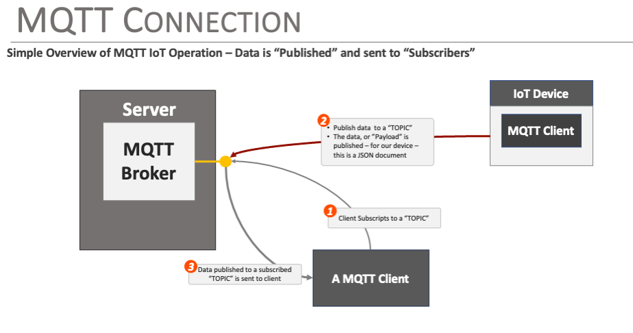
The DataLogger IoT supports MQTT connections, allowing an end user to enter the parameters for the particular MQTT Broker for the application to publish data to. When the application outputs data to the broker, the DataLogger IoT publishes the available information to the specified "topic" with the payload that is a JSON document.
Data Structure
Data is published to the MQTT broker as a JSON object, which contains a collection of sub-objects. Each sub-object represents a data source in the sensor, and contains the current readings from that source.
The following is an example of the data posted - note, this representation was "pretty printed" for readability.
{
"MAX17048": {
"Voltage (V)": 4.304999828,
"State Of Charge (%)": 115.0625,
"Change Rate (%/hr)": 0
},
"CCS811": {
"CO2": 620,
"VOC": 33
},
"BME280": {
"Humidity": 25.03613281,
"TemperatureF": 79.64599609,
"TemperatureC": 26.46999931,
"Pressure": 85280.23438,
"AltitudeM": 1430.44104,
"AltitudeF": 4693.04834
},
"ISM330": {
"Accel X (milli-g)": -53.31399918,
"Accel Y (milli-g)": -34.03800201,
"Accel Z (milli-g)": 1017.236023,
"Gyro X (milli-dps)": 542.5,
"Gyro Y (milli-dps)": -1120,
"Gyro Z (milli-dps)": 262.5,
"Temperature (C)": 26
},
"MMC5983": {
"X Field (Gauss)": -0.200622559,
"Y Field (Gauss)": 0.076416016,
"Z Field (Gauss)": 0.447570801,
"Temperature (C)": 29
}
}
MQTT Broker Connection Setup
To connect to a MQTT Broker, the following information is needed:
- The server name/address
- The server port
- The topic to post to
- [optional] The name of the device/Client name publishing the data
- [optional] A username - if required
- [optional] A password - if required
These values are set using the standard DataLogger methods - the interactive menu system, or a JSON file.
MQTT Menu System
We'll need to adjust the settings for the MQTT Client using the MQTT Menu System.
For users that are interested in using the menu system, open a Serial Terminal, connect to the COM port that your DataLogger enumerated to, and set it to 115200 baud. In this case, we connected to COM13. Press any key to enter the Main Menu. Type 1 to enter the Settings menu. Then type 9 to enter the MQTT Client Menu. When the menu system for the MQTT connection is presented, the following options are displayed:

The options are:
- Enable/Disable the connection
- Broker Port - The standard port for mqtt is 1883
- Broker Server - This is just the name of the server
- MQTT Topic - A string
- Client Name
- Username
- Password
- Buffer Size
At a minimum, the Broker Port, Broker Server Name, and MQTT Topic need to be set. What parameters are required depends on the settings of the broker being used.
NOTE If a secure connection is being used with the MQTT broker, use the MQTT Secure Client option of the DataLogger IoT. This option supports secure connectivity.
NOTE The Buffer Size option is dynamic by default, adapting to the size of the payload being sent. If runtime memory is a concern, set this value to a static size that supports the device operation.
Once all these values are set, the system will publish data to the specified MQTT Broker, following the JSON information structure noted earlier in this document.
JSON File Entries
If a JSON file is being used as an option to import settings into the DataLogger IoT, the following entries are used for the MQTT IoT connection:
"MQTT Client": {
"Enabled": false,
"Port": 1883,
"Server": "my-mqttserver.com",
"MQTT Topic": "/sparkfun/datalogger1",
"Client Name": "mysensor system",
"Buffer Size": 0,
"Username": "",
"Password": ""
},
Where:
Enabled- Set totrueto enable the connection.Port- Set to the broker port.Server- The MQTT broker server.MQTT Topic- The topic to publish to.Client Name- Optional client name.Buffer Size- Internal transfer buffer size.Username- Broker user name if being used.Password- Broker password if being used.
TIP To load the values by the system at startup using a JSON file and microSD card, you will need to configure the Save Settings. This JSON file will be created with the "Save to Fallback" option. Make sure to enable the MQTT Client as well.
Testing the MQTT Connection
Use of a MQTT connection is fairly straightforward - just requiring the entry of broker details into the connection settings.
To test the connection, you need a MQTT broker available. A quick method to setup a broker is by installing the mosquitto package on a Raspberry Pi computer. Our basic MQTT Tutorial provides some basic setup for a broker.
This MQTT Broker Tutorial has more details, covering the setup needed for modern mosquitto configurations.
And once the broker is setup, the messages published by the IoT sensor are visible using the mosquitto_sub command as outlined. For example, to view messages posted to a the topic "/sparkfun/datalogger1", the following command is used:
This assumes the MQTT broker is running on the same machine, and using the default port number.
Creating and Connecting to an AWS IoT Device (Thing)
One of the key features of the DataLogger IoT is it's simplified access to IoT service providers. This document outlines how an AWS IoT device is used by the DataLogger IoT.
The following is covered by this document:
- Device (Thing) creation in AWS
- Securely connecting the device
- How data is posted from the DataLogger IoT to the AWS Device via it's Shadow
Currently, the AWS IoT device connection is a single direction - used to post data from the hardware to the IoT AWS Device via the AWS IoT devices shadow. Configuration information from AWS IoT to the DataLogger IoT is currently not implemented.
General Operation
AWS IoT enables connectivity between an IoT / Edge device and the AWS Cloud Platform, implementing secure endpoints and device models within the AWs infrastructure. This infrastructure allows edge devices to post updates, status and state to the AWS infrastructure for analytics, monitoring and reporting.
In AWS IoT, an virtual representation of an actual device is created and referred to as a Thing. The virtual device/Thing is allocated a connection endpoint, security certificates and a device shadow - a JSON document used to persist, communicate and manage device state within AWS.
The actual IoT device communicates with it's AWS representation via a secure MQTT connection, posting JSON document payloads to a set of pre-defined topics. Updates are posted to the AWS IoT device shadow, which is then accessed within AWS for further process as defined by the users particular cloud implementation.
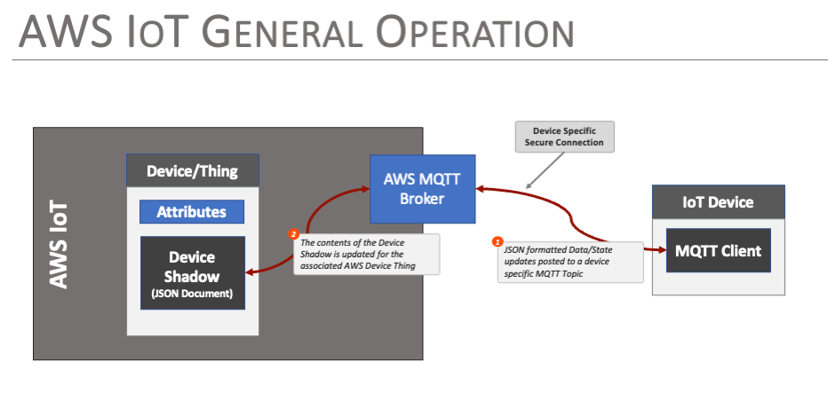
Creating a Device in AWS IoT
The following discussion outlines the basic steps taken to create a Thing in AWS IoT that the DataLogger IoT can connect to. First step is to log into your AWS account and create a thing.
Once logged into your AWS account, select IoT Core from the menu of services. 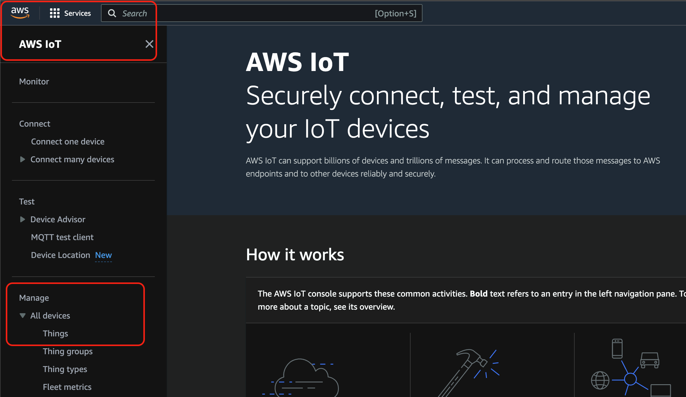
From the IoT Core console page, under the Manage section, select All Devices > Things
On the resultant Things Page, select the Create Things button.
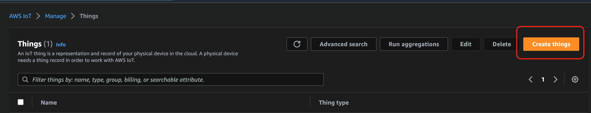
AWS IoT will then take you through the steps to create a device. Selections made for a demo Thing are:
- Create single thing
- Thing Properties
- Enter a name for your thing - for this example TestThing23
- Device Shadow - select Unnamed shadow (classic)
- Auto-generate a new certificate
- Attach policies to certificate - This is discussed later in this document
- Select Create thing
Upon creation, AWS IoT presents you with a list of downloadable certificates and keys. Some of these are only available at this step. The best option is to download everything presented - three of these are used by the DataLogger IoT. The following should be downloaded:
- Device Certificate
- Public Key File
- Private Key File
- Root CA certificates - (for example: Amazon Root CA 1 )
At this point, the new AWS IoT thing is created and listed on the AWS IoT Things Console

Security Policy
To write to the IoT device, a security policy that enables this is needed, and the policy needs to be assigned to the devices certificate.
To create a Policy, select the Manage > Security > Policies menu item from the left side menu of the AWS IoT panel. Once on this page, select the Create policy button to create a new policy.
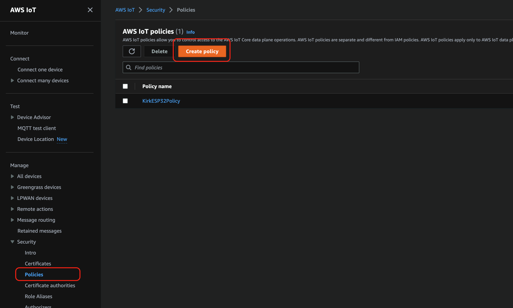
When entering the policy, provide a name that fits your need. For this example, the name NewThing23Policy is used. For the Policy document, you can manually enter the security entires, or enter them as a JSON document. The JSON document used for this example is:
{
"Version": "2012-10-17",
"Statement": [
{
"Effect": "Allow",
"Action": "iot:Connect",
"Resource": "*"
},
{
"Effect": "Allow",
"Action": "iot:Subscribe",
"Resource": "*"
},
{
"Effect": "Allow",
"Action": "iot:Receive",
"Resource": "*"
},
{
"Effect": "Allow",
"Action": "iot:Publish",
"Resource": "*"
},
{
"Effect": "Allow",
"Action": "iot:GetThingShadow",
"Resource": "*"
},
{
"Effect": "Allow",
"Action": "iot:UpdateThingShadow",
"Resource": "*"
}
]
}

Once the policy is created, go back to the IoT Device/Thing created above and associate this policy to the device Certificate.
- Go to your device Manage > All devices > Things
- Select the device - TestThing23 for this example
- Select the Certificates tab
- Select the listed Certificate (it's a very long hex number)
- At the bottom right of the page, select the Attach policies button and select the Policy created above.
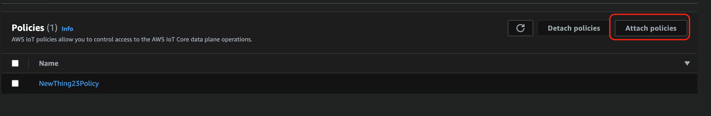
At this point, AWS IoT is ready for a device to connect and receive data.
AWS Configuration
The specifics for the AWS IoT Thing must be configured. This includes the following:
- Server name/host
- MQTT topic to update
- Client Name - The AWS IoT Thing Name
- CA Certificate Chain
- Client Certificate
- Client Key
Server Name/Hostname
This value is obtained from the AWS IoT Device page for the created device. When on this page, select the Device Shadows tab, and then select the Classic Shadow shadow, which is listed. Note a secure connection is used, so the port for the connection is 8883.

Selecting the Classic Shadow entry provides the Server Name/Hostname for the device, as well as the MQTT topic for this device.
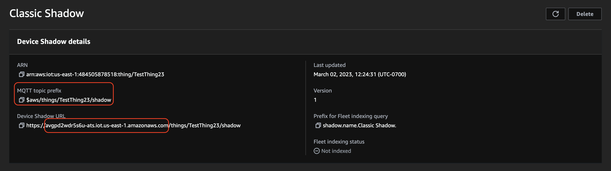
Note
The server name is obtained from the Device Shadow URL entry
MQTT Topic
The MQTT topic value is based uses the MQTT topic prefix from above, and has the value update added to it. So for this example, the MQTT topic is:
Client Name
This is the AWS IoT name of the thing. For the provided example, the value is TestThing23
CA Certificate Chain
This value was downloaded as a file during the creation process. The contents of this file can be passed on to the DataLogger IoT by copying the file containing the data onto a devices SD Card and setting the filename property for the DataLogger IoT.
Client Certificate
This value was downloaded as a file during the creation process. The contents of this file can be passed on to the DataLogger IoT by copying the file containing the data onto a devices SD Card and setting the filename property for the DataLogger IoT.
Client Key
This value was downloaded as a file during the creation process. The contents of this file can be passed on to the DataLogger IoT by copying the file containing the data onto a devices SD Card and setting the filename property for the DataLogger IoT.
Setting Properties
The above property values must be set on the DataLogger before use. They can be set manually by using the menu system like the previous MQTT example.
For users that are interested in using the menu system, you will need to open a Serial Terminal, connect to the COM port that your DataLogger enumerated to, and set it to 115200 baud. In this case, we connected to COM13. Press any key to enter the Main Menu. Type <1 to enter the Settings menu. Then type 11 to enter the AWS IoT Menu. When the menu system for the AWS IoT connection is presented, you will need to configure the property values as listed in the JSON file. Saving the values through the menu system will save the credentials to the ESP32's persistent memory. The following options are displayed:

The alternative to using the menu system is a JSON file. These values can be set using a JSON file that is loaded by the system at startup. For the DataLogger IoT example outlined in this document, the entries in the settings JSON file are as follows:
"AWS IoT": {
"Enabled": true,
"Port": 8883,
"Server": "avgpd2wdr5s6u-ats.iot.us-east-1.amazonaws.com",
"MQTT Topic": "$aws/things/TestThing23/shadow/update",
"Client Name": "TestThing23",
"Buffer Size": 0,
"Username": "",
"Password": "",
"CA Certificate": "",
"Client Certificate": "",
"Client Key": "",
"CA Cert Filename": "AmazonRootCA1.pem",
"Client Cert Filename": "TestThing23_DevCert.crt",
"Client Key Filename": "TestThing23_Private.key"
},
Besides updating the Server, MQTT Topic, Client Name, CA Cert Filename, Client Cert Filename, and Client Key Filename, you will need to also ensure that the port is set to 8883. The default in previous firmware versions was 1883. As of firmware v01.00.04, the default is 8883. You will need to adjust the port value to properly connect to the AWS IoT service. Don't forget to enable AWS IoT service by setting the value to true. If the JSON file is saved in the microSD card, you can load the credentials to the DataLogger IoT.
To load the values by the system at startup using a JSON file and microSD card, you will need to configure the Save Settings. This JSON file will be created with the "Save to Fallback" option. Make sure to enable the AWS IoT as well.
Operation
Once the device is configured and running, updates in AWS IoT are listed in the Activity tab of the devices page. For the test device in this document, this page looks like:
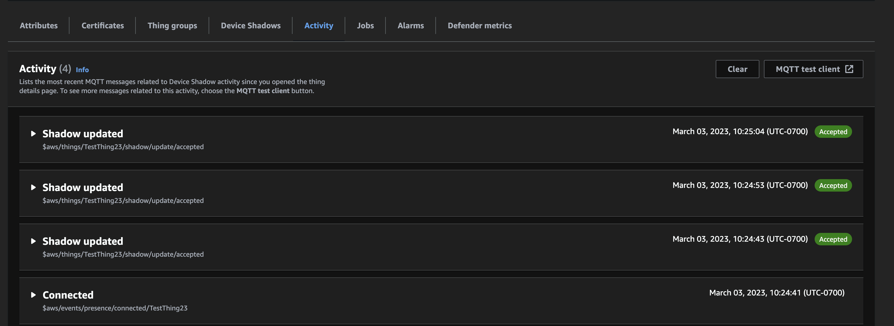
Opening up an update, you can see the data being set to AWS IoT in a JSON format.

Creating and Connecting to ThingSpeak
One of the key features of the DataLogger IoT is it's simplified access to IoT service providers. This document outlines how a ThinkSpeak output is used by the DataLogger IoT.
The following is covered by this document:
- Creating a ThingSpeak Channel and MQTT Connection
- Securely connecting the ThingSpeak
- How data is posted from the DataLogger IoT to ThingSpeak
General Operation
ThingSpeak Structure
The structure of ThingSpeak is based off of the concept of Channels, with each channel supporting up to eight fields for data specific to the data source. Each channel is named, and has a unique ID associated with it. One what to think of it is that a Channel is a grouping of associated data values or fields.
The fields of a channel are enumerated as Field1, Field2, ..., Field8, but each field can be named to simplify data access and understanding.
As data is reported to a ThingSpeak channel, the field values are accessible for further processing or visualization output.
Data Structure
The DataLogger IoT is constructed around the concept of Devices which are often a type of sensor that can output a set of data values per observation or sample.
Mapping Data to ThingSpeak
The concept of Channels that contain Fields in ThingSpeak is similar to the Devices that contain Data within the DataLogger IoT, and this similarity is the mapping model used by the DataLogger IoT. Specifically:
- Devices == Channels
- Data == Fields

During configuration of the DataLogger IoT, the mapping between the Device and ThingSpeak channel is specified. The data to field mapping is automatically created by the DataLogger IoT following the data reporting order from the specific device driver.
Creating a Device to a ThingSpeak Channel
The following discussion outlines the basic steps taken to create a Channel in ThingSpeak and then connect it to the DataLogger's Device. First step is to log into your ThingSpeak and create a Channel.
Once logged into your ThingSpeak account, select Channels > My Channels menu item and on the My Channel page, select the New Channel button.

On the presented channel page, name the channel and fill in the specific channel fields. The fields should map to the data fields reported from the Device being linked to this channel. Order is important, and is determined by looking at output of a device to the serial device (or reviewing the device driver code).

Once the values are entered, select Save Channel. ThingSpeak will now show list of Channel Stats, made up of line plots for each field specified for the channel.
Key note - at the top of this page is listed the Channel ID. Note this number - it is used to map a Device to a ThingSpeak Channel.
Setting Up ThingSpeak MQTT
The DataLogger IoT uses MQTT to post data to a channel. From the ThingSpeak menu, select Devices > MQTT, which displays a list of your MQTT devices. From this page, select the Add a new device button.
On the presented dialog, enter a name for the MQTT connection and in the Authorize channels to access, select the channel created earlier. Once you select a channel, click the Add Channel button.
More channels can be added later.

When the MQTT device is created, a set of credentials (Client ID, Username, and Password) is provided. Copy or download these values, since the password in not accessible after this step.
The selected Channel is then listed in the Authorized Channel table. Ensure that the Allow Publish and Allow Subscribe attributes are enabled for the added channel.

At this point, the ThingSpeak Channel is setup for access by the DataLogger IoT.
ThingSpeak Configuration
Once the device is integrated into the application, the specifics for the ThingSpeak Channel(s) must be configured. This includes the following:
- Server Name/Hostname
- Client Name
- User Name
- Password
- Device to Channel mapping
- CA Certificate Chain
Server Name/Hostname
This value is hostname of the ThingSpeak mqtt connection, which is mqtt3.thingspeak.com as note at ThingSpeakMQTT Basics page. Note a secure connection is used, so the port for the connection is 8883.
Client Name/ID
The Client Name/ID is found under MQTT connection details listed in the Devices > MQTT section of ThingSpeak.
Username
The Username is found under MQTT connection details listed in the Devices > MQTT section of ThingSpeak.
Password
The connection password was provided when the MQTT device was created. If you lost this value, you can regenerate a password on the MQTT Device information page.
Certificate File
You can download the cert file for ThingSpeak.com page using a web-browser. Click on the security details of this page, and navigate the dialog (browser dependent) to download the certificate. The downloaded file is the made available for the DataLogger IoT to use as a file that is loaded at runtime)
Setting Properties
The above property values must be set on the DataLogger IoT before use. They can be manually by using the menu system like the previous MQTT example.
For users that are interested in using the menu system, you will need to open a Serial Terminal, connect to the COM port that your DataLogger enumerated to, and set it to 115200 baud. In this case, we connected to COM13. Press any key to enter the Main Menu. Type 1 to enter the Settings menu. Then enter the ThingSpeak MQTT Menu. When the menu system for the ThingSpeak MQTT connection is presented, you will need to configure the property values as listed in the JSON file. Saving the values through the menu system will save the credentials to the ESP32's persistent memory. The following options are displayed:

The alternative to using the menu system is a JSON file. These values can be set using a JSON file that is loaded by the system at startup. For the ThingSpeak example outlined in this document, the entries in the settings JSON file are as follows:
"ThingSpeak MQTT": {
"Enabled": true,
"Port": 8883,
"Server": "mqtt3.thingspeak.com",
"MQTT Topic": "",
"Client Name": "MQTT_Device_Client_ID",
"Buffer Size": 0,
"Username": "MQTT_Device_Username",
"Password": "MQTT_Device_Password",
"CA Cert Filename": "ThingspeakCA.cer",
"Channels" : "BME280=2054891"
}
The Channels value is a list of [DEVICE NAME]=[Channel ID] pairs. Each pair is separated by a comma. In this case, the device name BME280 and the channel ID was 2054891. Make sure to match the device name that was loaded on start up with the unique channel ID that was generated when creating a ThingSpeak Channel.
Besides updating the Server, Client Name, Username, Password, CA Cert Filename, and Channels, you will need to also ensure that the port is set to 8883. The default in previous firmware versions was 1883. As of firmware v01.00.04, the default is 8883. You will need to adjust the port value to properly connect to the ThingSpeak service. Don't forget to enable ThingSpeak MQTT service by setting the value to true. If the JSON file is saved in the microSD card, you can load the credentials to the DataLogger IoT.
To load the values by the system at startup using a JSON file and microSD card, you will need to configure the Save Settings. This JSON file will be created with the "Save to Fallback" option. Make sure to enable the ThingSpeak MQTT as well.
Monitoring Output
Once the connector is configured and the DataLogger IoT is connected to ThingSpeak, as data is posted, the results are show on the Channel Stats page for your Channel. For the above example, the output of a SparkFun BME280 sensor produces the following output:

Setting Up 2x or More Devices
For users that are setting up 2x or more devices on the DataLogger IoT, you will need to ensure that each device has their own ThingSpeak Channel. Unfortunately, you are not able to plot sensor readings from two devices in the same channel.
The following example demonstrates how to set up two devices for ThingSpeak on the DataLogger IoT. In this case, we will use the BME688 and BME680 and their respective default I2C address. This is also a good example of what to do when two devices use the same device driver. Head to ThingSpeak to create a channel for each device connected to the DataLogger IoT. Include a field for each device data that the DataLogger provides. The name of the channel does not need to match the device name or I2C address.
Creating a Channel for the BME688

Creating a Channel for the BME680

Once the channels are created, you will be provided with a unique channel ID for each channel. Make sure to take note of the number as explained earlier.
The alternative I2C address for the BME688 and BME680 uses the same address as the default of the other sensor:
- BME680: 0x77 (Default) or 0x76
- BME688: 0x76 (Default) or 0x77
Make sure to avoid using the same address when connecting the sensors to the same DataLogger IoT.
When setting up the connection, you will need to authorize both channels. In this example, we included the channels for the BME688 [x076] and BME680 [x077].
Authorizing 2x Channels through the Same Connection

Now that the ThingSpeak MQTT connection is setup, adjust the ThingSpeak configuration for the DataLogger IoT by including the credentials (i.e. Client Name, Username, and Password) and channels. We will assume that you have included the ThingSpeak CA certificate file in the root directory of the microSD card already. When including the device name with their respective channel, ensure that the device name matches the name that was loaded on startup. For example, the BME688 and BME680 were loaded on startup as BME68x and BME68x [x77], respectively. Since we are only interested in plotting the BME688 and BME680, we will ignore the MAX17048 that was loaded on startup as well. Under /Settings/ThingSpeak MQTT/Channels, you will enter the string for the device names, each of their respective channel IDs, and a comma separating the two channels like so: BME68x=2613826, BME68x [x77]=2613825.
DataLogger IoT Device Name Loaded during Startup

Device Name and Channel for Both Sensors

Whenever there are multiple devices using the same device driver (each with unique I2C addresses), the DataLogger IoT will display the device address for each additional device that is loading the same driver. As shown above, the first device name did not include the device's I2C address. The second device name using the same driver included its I2C address. Of course, there is an configuration that enables you to always include the address of all the device names.
The alternative to using the menu system is the JSON file. In this case, we updated channels for the BME688 and BME680. Not shown are the ThingSpeak Client Name, Username, and Password.
"ThingSpeak MQTT": {
"Enabled": true,
"Port": 8883,
"Server": "mqtt3.thingspeak.com",
"MQTT Topic": "",
"Client Name": "MQTT_Device_Client_ID",
"Buffer Size": 0,
"Username": "MQTT_Device_Username",
"Password": "MQTT_Device_Password",
"CA Cert Filename": "ThingspeakCA.cer",
"Channels" : "BME68x=2613826, BME68x [x77]=2613825"
}
If users configure the DataLogger IoT to always include the device address with the device names (i.e. /Settings/Application Settings with Device Names=1), you will need to match the device names for BME688 and BME680 that were loaded on startup as BME68x [x76] and BME68x [x77], respectively. Note the BME688 device name included a space and [x76] in this case. Remember, we are only interested in plotting hte BME688 and BME680 in this case so we will ignore the MAX17048 that was loaded on startup.
DataLogger IoT Device Names Loaded during Startup

Device Name and Channel for Both Sensors with Respective Addresses

Again, the alternative to using the menu system is the JSON file. In this case, we updated channels for the BME688 and BME680. We also included the address name for the BME688 like the configuration menu. Not shown are the ThingSpeak Client Name, Username, and Password.
"ThingSpeak MQTT": {
"Enabled": true,
"Port": 8883,
"Server": "mqtt3.thingspeak.com",
"MQTT Topic": "",
"Client Name": "MQTT_Device_Client_ID",
"Buffer Size": 0,
"Username": "MQTT_Device_Username",
"Password": "MQTT_Device_Password",
"CA Cert Filename": "ThingspeakCA.cer",
"Channels" : "BME68x [x76]=2613826, BME68x [x77]=2613825"
}
Save the configuration to persistent memory and exit out of the configuration menu. Wait a few seconds for the DataLogger IoT to read the sensors and output the readings to the Serial Terminal. Open ThingSpeak channels in separate browser windows. In this case, we had the BME688 and the BME680 in private view. You should see sensor readings update and plot on the charts.
ThingSpeak Graphing the BME688 and BME680 in Seperate Channels on Two Browser Windows

Creating and Connecting to an Azure IoT Device
One of the key features of the DataLogger IoT is it's simplified access to IoT service providers. This document outlines how an Azure IoT device is used by the DataLogger IoT.
The following is covered by this document:
- Device creation Azure
- Securely connecting the device
- How data is posted from the DataLogger IoT to the Azure Device
Currently, the Azure IoT device connection is a single direction - it is used to post data from the hardware to the Azure IoT Device. Configuration information from Azure IoT to the DataLogger IoT is currently not implemented.
General Operation
Azure IoT enables connectivity between an IoT / Edge device and the Azure Cloud Platform, implementing secure endpoints and device models within the Azure infrastructure. This infrastructure allows edge devices to post updates, status and state to the Azure infrastructure for analytics, monitoring and reporting.
In Azure IoT, an virtual representation of an actual device is created and referred to as a Device. The virtual device is allocated a connection endpoint, security certificates and a device digital twin - a JSON document used to persist, communicate and manage device state within Azure. Unlike AWS IoT, data from the device isn't posted to the devices digital twin (AWS Shadow), but to the device directly.
The actual IoT device communicates with it's Azure representation via a secure MQTT connection, posting JSON document payloads to a set of pre-defined topics. Updates are posted directly to the Azure device, which is then accessed within Azure for further process as defined by the users particular cloud implementation.

Creating a Device in Azure IoT
The following discussion outlines the basic steps taken to create a Device in Azure IoT that the DataLogger IoT can connect to. First step is to log into your Azure account and create an IoT Hub for your device.
Once logged into your Microsoft Azure account, select Internet of Things > IoT Hub from the menu of services.

Create an IoT Hub
This IoT Hub page lists all the IoT hubs available for your account. To add a device, you need to create a new IoT Hub.
Follow the Hub Creation workflow - key settings used for a DataLogger demo device:
- Used the "Free Tier" for testing and development.
- Networking
- Connectivity - Public Access
- Minimum TLS Version - 1.0
The remaining settings were set at their default values.
Create a Device
Once the IoT Hub is created, a Device needs to be created within the hub. The device represents the connection to the actual DataLogger IoT device.
To create a device, select the Device management > Devices from the IoT Hub menu and the select the + Add Device menu item

In the create device dialog:
- Enter a name for the device
- Select an Authentication type of Symmetric key
- Auto-generate keys enabled

Once created, the device is listed in the Devices list of the IoT Hub. Selecting the device gives you the device ID and keys used to communicate with the device. Note, when connecting to the device with the DataLogger IoT, the Primary Key value is used.
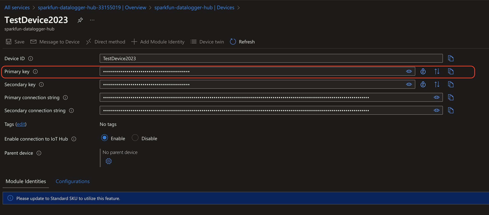
Azure Configuration
Once the DataLogger IoT is integrated into the application, the specifics for the Azure IoT Thing must be configured. This includes the following:
- Server Name/Hostname
- Device Key
- Device ID
- CA Certificate Chain
Server Name/Hostname
This value is hostname of the created IoT Hub and is obtained from the Overview page of the IoT Hub. Note a secure connection is used, so the port for the connection is 8883.
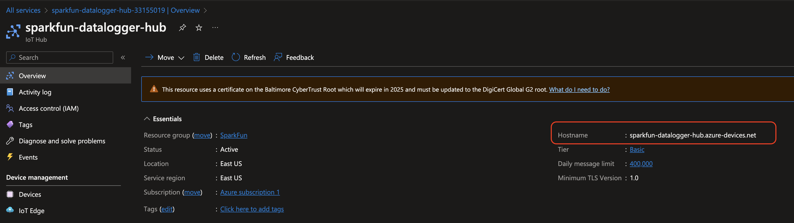
Device ID
The Device ID is obtained from the device detail page. This page is accessible via the Device listing page, which is accessed via the Device management > Devices menu item. The selected device of interest (TestDevice2023 for this example) provides the device ID and Primary Key.
Device Primary Key
This is obtained via the Device details page, as outlined in the previous section.
You view and copy the key via the icons on the right of the key entry line.
Root Certificate Authority - CA file
The Certificate Authority file for Azure is downloaded from this page:

The file to download is the Baltimore CyberTrust Root entry in the Root Certificate Authorities section of the page.
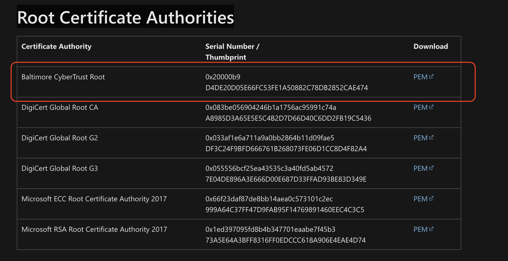
Setting Properties
The above property values must be set on the DataLogger IoT before use. They can be set manually by using the menu system like the previous MQTT example.
For users that are interested in using the menu system, you will need to open a Serial Terminal, connect to the COM port that your DataLogger enumerated to, and set it to 115200 baud. In this case, we connected to COM13. Press any key to enter the Main Menu. Type 1 to enter the Settings menu. Then type 13 to enter the Azure IoT Menu. When the menu system for the Azure IoT connection is presented, you will need to configure the property values as listed in the JSON file. Saving the values through the menu system will save the credentials to the ESP32's persistent memory. The following options are displayed:

The alternative to using the menu system is a JSON file. These values can be set using a JSON file that is loaded by the system at startup. For the example outlined in this document, the entries in the settings JSON file are as follows:
"Azure IoT": {
"Enabled": true,
"Port": 8883,
"Server": "sparkfun-datalogger-hub.azure-devices.net",
"MQTT Topic": "",
"Client Name": "",
"Buffer Size": 0,
"Username": "",
"Password": "",
"Device Key" : "My-Super-Secret-Device-Key",
"Device ID" : "TestDevice2023",
"CA Cert Filename": "AzureRootCA.pem"
},
Besides updating the Server, Device Key, Device ID, and CA Cert Filename, you will need to also ensure that the port is set to 8883. The default in previous firmware versions was 1883. As of firmware v01.00.04, the default is 8883. You will need to adjust the port value to properly connect to the Azure IoT service. Don't forget to enable Azure IoT service by setting the value to true. If the JSON file is saved in the microSD card, you can load the credentials to the DataLogger IoT.
To load the values by the system at startup using a JSON file and microSD card, you will need to configure the Save Settings. This JSON file will be created with the "Save to Fallback" option. Make sure to enable the Azure IoT as well.
Operation and Monitoring
Once the DataLogger IoT device is configured and running, the Azure IoT capability in the DataLogger IoT posts messages via MQTT to the connected Azure Device via it's IoT Hub. Messages to the device are posted as Telemetry Data for the device.
The easiest method to view the Telemetry data being sent to an Azure Iot Device is via the Azure IoT Hub extension for the Visual Studio Code editor.
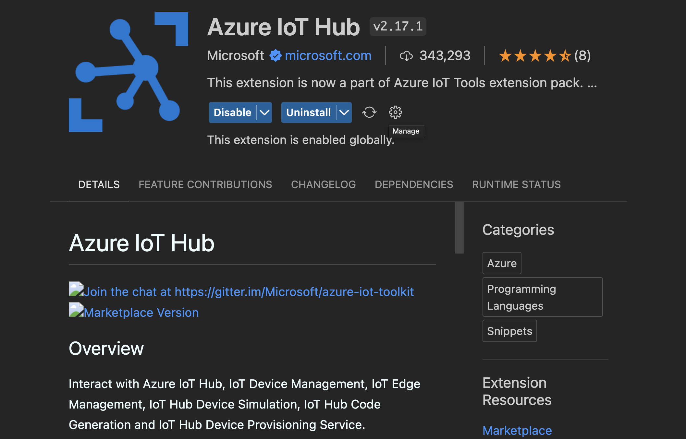
Once installed, and connected to Azure via the Azure Account extension, you can connect to the target IoT Hub, and monitor telemetry data for a IoT device.
Connect to Your Azure IoT Hub
On the Explorer panel of Visual Studio Code, click on the ... menu of the AZURE IOT HUB section. In the popup menu, select the Select IoT Hub menu entry.
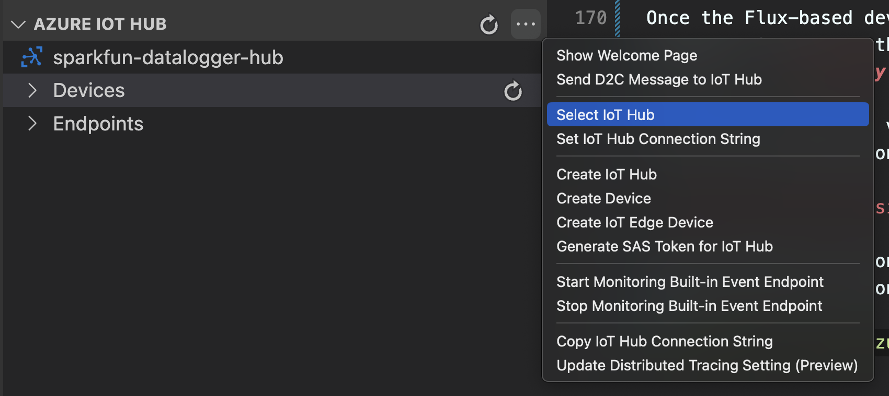
The available IoT Hubs are displayed in the editors command prompt. Select the desired hub and press Enter (or click).

Select IoT Hub
The hub is then displayed in the AZURE IOT HUB section of the editor Explorer. Expanding the Devices section of the Hub will list the example device created above.
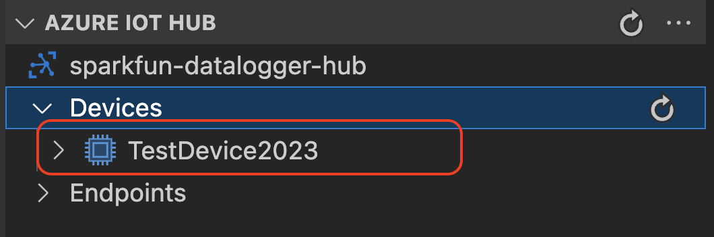
Monitoring
To monitor the telemetry data send to a device, right click on the device, TestDevice2023 in this example, select the menu entry Start Monitoring Build-in Event Endpoint.
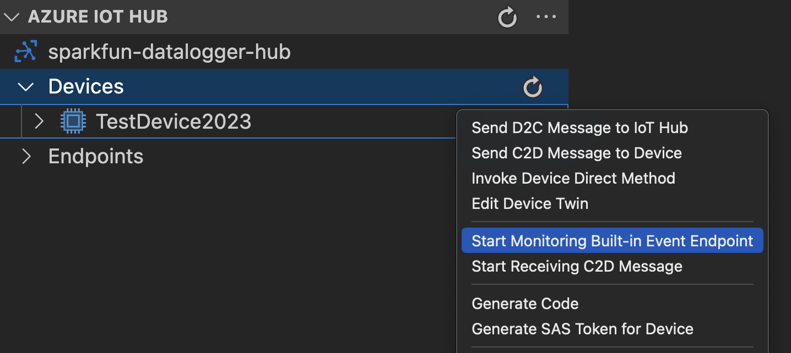
Once selected, the editor output console will start displaying output for the selected device. For the above example, with a device that has environmental sensors attached, the output appears as follows:
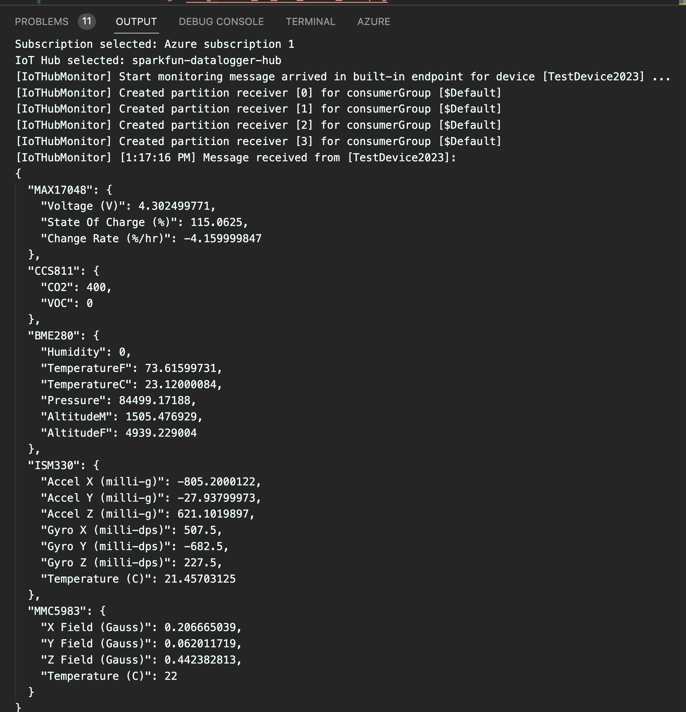
To stop monitoring, click the Stop Monitoring build-in event endpoint item that is displayed in the status bar of the editor.
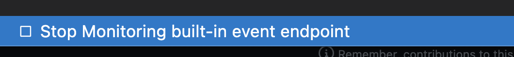
A menu option to stop monitoring is also available from the ... menu of the AZURE IOT HUB section in the editor Explorer panel.
Connecting and Sending Output to an HTTP Server
One of the key features of the DataLogger IoT is it's simplified access to IoT service providers and servers. This document outlines how output from a DataLogger IoT device is sent to an HTTP server.
The following is covered by this document:
- Overview of the HTTP connection
- How a user configures and uses the HTTP connection
- Use examples
General Operation
HTTP connectivity allows data generated by the DataLogger IoT to be sent to an HTTP server. An HTTP endpoint is provided to the HTTP action within the DataLogger IoT, and when data is output, a JSON representation of the data is published to the endpoint via an HTTP POST operation. The body of the POST operation contains the a JSON document that encapsulates the sent DataLogger IoT data.
Data Structure
Data is sent to the HTTP server as a JSON object, which contains a collection of sub-object. Each sub-object represents a data source in the sensor, and contains the current readings from that source.
The following is an example of the data posted - note, this representation was "pretty printed" for readability.
{
"MAX17048": {
"Voltage (V)": 4.304999828,
"State Of Charge (%)": 115.0625,
"Change Rate (%/hr)": 0
},
"CCS811": {
"CO2": 620,
"VOC": 33
},
"BME280": {
"Humidity": 25.03613281,
"TemperatureF": 79.64599609,
"TemperatureC": 26.46999931,
"Pressure": 85280.23438,
"AltitudeM": 1430.44104,
"AltitudeF": 4693.04834
},
"ISM330": {
"Accel X (milli-g)": -53.31399918,
"Accel Y (milli-g)": -34.03800201,
"Accel Z (milli-g)": 1017.236023,
"Gyro X (milli-dps)": 542.5,
"Gyro Y (milli-dps)": -1120,
"Gyro Z (milli-dps)": 262.5,
"Temperature (C)": 26
},
"MMC5983": {
"X Field (Gauss)": -0.200622559,
"Y Field (Gauss)": 0.076416016,
"Z Field (Gauss)": 0.447570801,
"Temperature (C)": 29
}
}
HTTP Connection Setup
To connect to an HTTP server endpoint, the following information is needed:
- The URL of the endpoint
- The SSL certificate for the target server, if the connection is secure (HTTPS)
These values are set using the standard DataLogger methods - the interactive menu system, or a JSON file.
Menu System
For users that are interested in using the menu system, you will need to open a Serial Terminal, connect to the COM port that your DataLogger enumerated to, and set it to 115200 baud. In this case, we connected to COM13. Press any key to enter the Main Menu. Type 1 to enter the Settings menu. Then enter the HTTP IoT Menu. When the menu system for the HTTP IoT connection is presented, you will need to configure the property values as listed in the JSON file. Saving the values through the menu system will save the credentials to the ESP32's persistent memory. The following options are displayed:

The options are:
- Enable/Disable the connection
- Set the URL for the endpoint
- Set the name of the CA Cert file for a secure connection (HTTP)
To set the HTTP URL/endpoint - select two (2) in the menu, and enter the URL. For this example, we'll enter: http://mysparkfunexample.com:8091.

In the above example, the URL/HTTP Endpoint is on a server called mysparkfunexample.com, on port 8091. Once set, the system will post data to this URL.
If the endpoint is a secure ssl (HTTPS) connection, the certificate for the server is required. Because of the size of the certificates, the value is provided as a file that is loaded into the system by the attached SD card.
The above example show providing a certificate filename of example.cer.
Once all these values are set, the system will post data to the specified HTTP endpoint, following the JSON information structure noted earlier in this document.
JSON File Entries
If a JSON file is being used as an option to import settings into the DataLogger IoT, the following entries are used for the HTTP IoT connection:
Where:
Enabled- Set totrueto enable the connection.URL- Set to the URL for the connection.CA Cert Filename- Set to the cert filename on the SD card if being used.
If the JSON file is saved in the microSD card, you can load the credentials to the DataLogger IoT.
Tip
To load the values by the system at startup using a JSON file and microSD card, you will need to configure the Save Settings. This JSON file will be created with the "Save to Fallback" option. Make sure to enable the HTTP IoT as well.
Example - Connecting to a HTTP Server
In this example, a simple HTTP Server is creating using Node JS, and the HTTP connection in the DataLogger IoT is used to post data to this server. The received data is output to the console from there server.
The Server
The following javascript/node code creates a HTTP server on port 8090, and outputs received data to the console.
var http = require('http');
// Setup the endpoint server
var myServer = http.createServer(function (req, res) {
// Initialize our body string
var body="";
// on data callback, append chunk to our body string
req.on('data', function(chunk){
body += chunk;
});
// On end callback, output the body to the console
req.on('end', function(){
// parse json string, then stringify it back for 'pretty printing'
console.log("payload: " + JSON.stringify(JSON.parse(body),null,2));
});
// send a reply
res.writeHead(200, {'Content-Type': 'text/plain'});
res.end('n');
// Just listen on our port
}).listen(8090);
The setup and use of node js is system dependant is beyond the scope of this document. However, Node JS is easily installed with your systems package manager (brew on macOS, Linux distribution package manager (apt, yum, ...etc), on Windows, the WSL is recommended).
Once Node is setup, the above server is run via the following command (assuming the implementation is in a file called simple_http.js):
As data is sent by the DataLogger IoT, the following is output to the console from the server:

Obtaining a Sites Security Certificate
Accessing a sites SSL/Secure Certificate is done via a web browser. The method for each browser is different. The following example uses Edge, which is similar to the operation in Chrome.
First, browse to the desired site/server. Click the Secure/Security area/button next to the URL to bring up the security detail page. On this page, select the Connection is secure menu option
Next, on the page shown, select the certificate button on the upper right of the dialog.
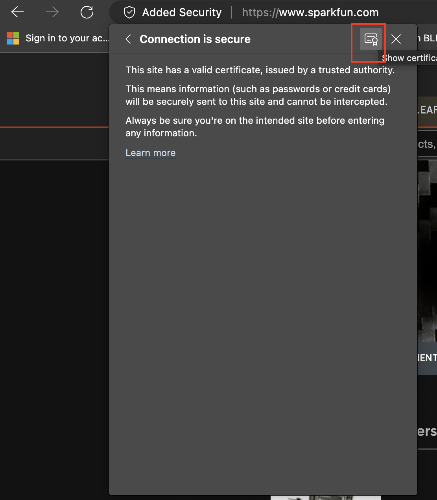
When you select this button, the certificate details dialog is displayed. On this page, select the Details tab, and select the Export... button on the lower right of the dialog. This will save the sites SSL/Security certificate to a location you specify.

Once saved, place this file on the SD card your system/DataLogger is using, and set the filename in the HTTP connection menu or settings JSON file.
Creating and Connecting to an Arduino Cloud Device
One of the key features of the SparkFun DataLogger IoT is it's simplified access to IoT service providers. This document outlines how an Arduino Cloud Device is used by the DataLogger IoT.
The following is covered by this document:
- Structure of the Arduino Cloud Devices
- Device creation in the Arduino Cloud
- Setup of the Arduino Driver
- How data is posted from the DataLogger IoT to the Arduino Device
Currently, the Arduino Cloud device connection is a single direction - used to post data from the DataLogger IoT to an Arduino Cloud device.
NOTE To take advantage of the API's in Arduino Cloud, you will also need to have a service plan with your account.
General Operation
The Arduino Cloud enables connectivity between an IoT/Edge Arduino enabled device and the cloud. The edge device updates data in the Arduino Cloud by updating variables or parameters attached to a cloud device.
In the Arduino Cloud, the edge device is represented by a Device which has a virtual Thing attached/associated with it. The Thing acts as a container for a list of parameters or variables which represent the data values received from the edge device. As values on the edge device update, they are transmitted to the Arduino Cloud.
For a SparkFun DataLogger IoT connected to an Arduino Cloud device, the output parameters of a device connected to the DataLogger are mapped to variables within the Arduino Cloud Device's Thing using a simple pattern of DeviceName_ParameterName for the name of the variable in the Arduino Cloud.

Creating a Device in Arduino Cloud
The first step connecting to the Arduino Cloud is setting up a device within the cloud. A device is a logical element that represents a physical device.
Log into your Arduino Cloud account.
Click on the expand menu icon on the upper left (e.g. the three lines stacked like a "hamburger"; ☰) and select Devices. If your window is big enough, then it will show up on the navigation bar.
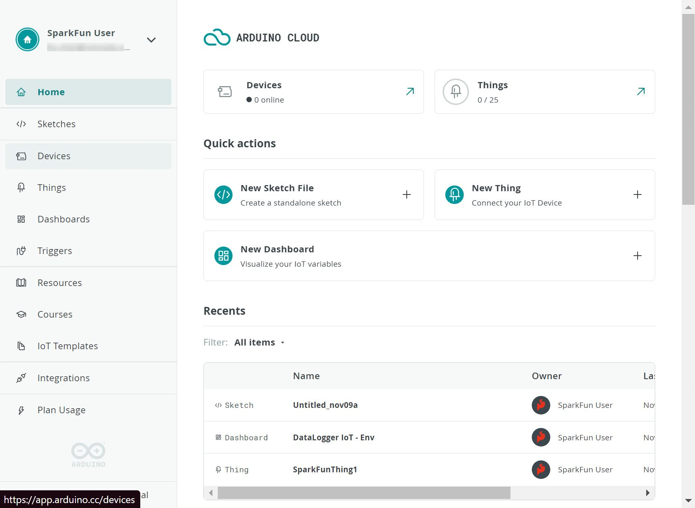
This page lists your currently defined devices. If there are no defined devices, select the Add Device button. This will probably be at the bottom of the page. The location of this button will change once the page has a device (or if there is an update to Arduino's user interface).
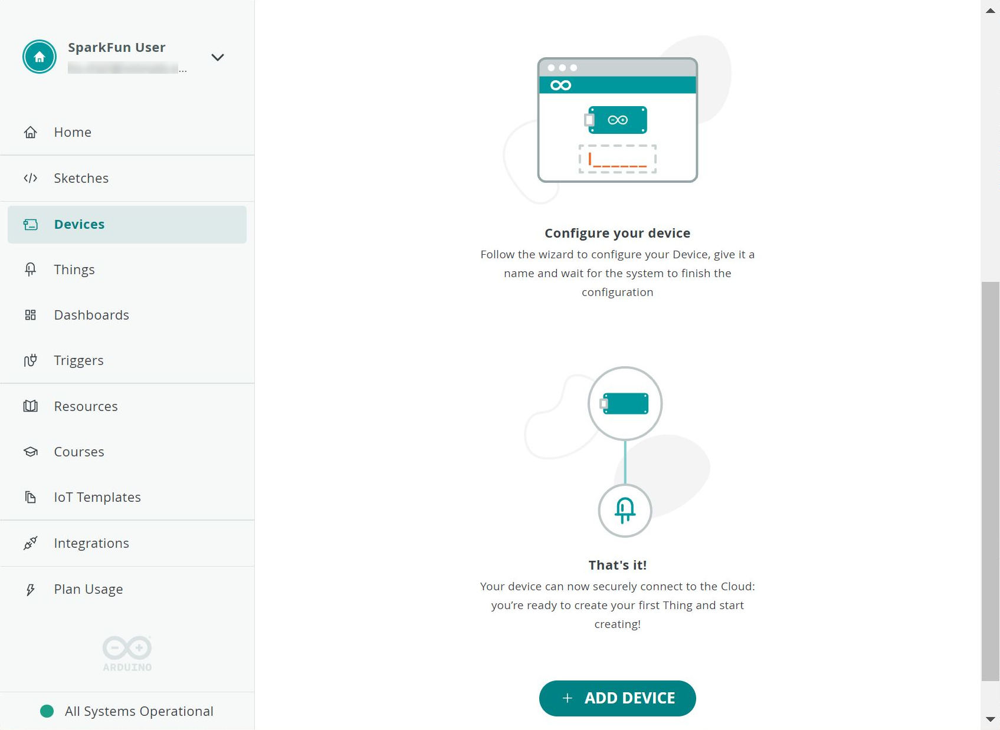
A device type selection dialog is then shown. Since we are connecting a DataLogger IoT board to the system, and not connected a known device, select DIY - Any Device to manually include the DataLogger IoT.

Once selected, another dialog is presented. Just select Continue. At this point you can provide a name for your device. In this case we named it as "MyDataLoggerIoT."

The next screen is the critical step of the device creation process. This step is the one time the Device Secret Key is available. The provided Device ID and Device Secret Key values are needed to connect to the Arduino Cloud. Once this step is completed, the Secret Key is no longer available.

The easiest way to capture these values is by downloading as a PDF file, which is offered on the setup page. Click on the download the PDF and save it to a safe location. When ready, click on the check box indicating that you have saved the values and select the Continue button.
Arduino Cloud API Keys
In addition to creating a device, to access the Arduino Cloud, the driver requires an API Key. This allows the DataLogger IoT's Arduino Cloud driver to access the web API of the Arduino Cloud. This API is used to setup the connection to the Arduino Cloud.
To create an API key, click on the menu bar to expand and select your Arduino account profile > Personal Settings.

This menu takes you to a list of existing API Keys. If you have not created one yet, the list will have nothing in it like the image below. From this page, select the CREATE API KEY button.

NOTE Users will need a service plan in order to take advantage of the API.
In the presented dialog, enter a name for the API key. In this case, we named it "MyDataLoggerKey".
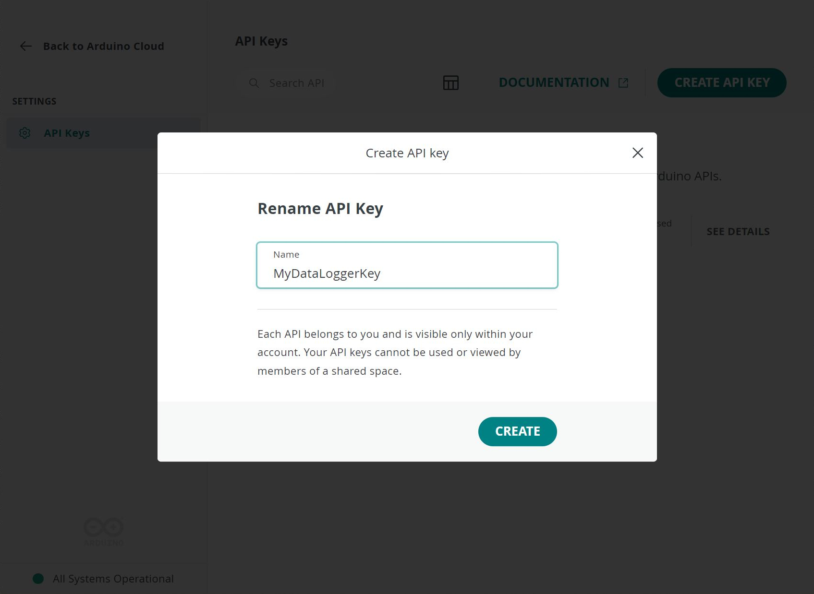
Once the name is entered, click CONTINUE. A page with the new API key is presented. Like in Device Creation, this page contains a secret that is only available on this page during this process.
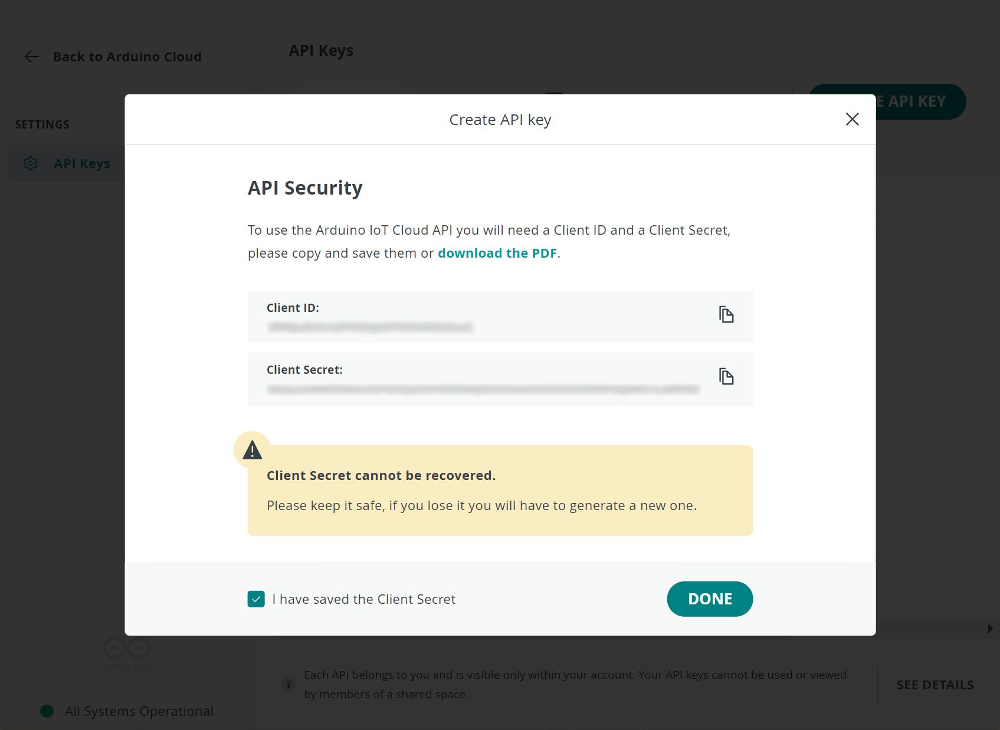
Make note of the Client ID and Client Secret values on this page. The best method to capture these values is to download the PDF file offered on this page. Click on the download the PDF and save it to a safe location. When ready, click on the check box indicating that you have saved the values and select the DONE button.
At this point, the Arduino Cloud is setup for connection by the driver.
Arduino Cloud Configuration
To add an Arduino Cloud Device as a destination DataLogger IoT, the Arduino Cloud connection is enabled via the DataLogger menu system and the connection values, obtained from the Arduino Cloud (see above), are set in the connection properties.
The specifics for the Arduino Cloud must be configured. This includes the following:
- Thing Name
- Thing ID
- API Client ID
- API Secret
- Device Secret
- Device ID
NOTE The Thing Name does not necessarily need to be configured. However, there will be less confusion if you set this up before connecting the DataLogger IoT to the Cloud. The Thing ID will automatically be generated and saved once there is a connection available.
Thing Name
The name of the Arduino Cloud Thing to use. If the Thing doesn't exist on startup, the driver will create a Thing and be named "Untitled" if you do not provide a name.
NOTE Note satisfied with the default "Untitled" as the Thing's name? You can rename the Thing Name after creating the Thing. Note that you will need to manually rename the Thing Name on the Arduino Cloud and DataLogger IoT.
Thing ID
This is the ID of the Thing being used. This value is obtained by the following methods:
- If the driver creates a new Thing, the ID is obtained and used.
- If an existing Thing is connected to the DataLogger IoT, the driver retrieves it's ID.
- In this case, the driver cannot create any new variables until the system is restarted.
- The user creates a new Thing using the web interface of Arduino Cloud, and provides the Thing Name and Thing ID .
API Client ID and Secret
These values are used to provide API access by the driver. This access allows for the creation/use of a Thing and Variables within the Arduino Cloud. These are obtained via the steps outlined earlier in this document.
Device Secret and ID
These values are used to identify the Arduino device that is connected to. These are obtained via the steps outlined earlier in this document.
Setting Properties
The above property values must be set in the DataLogger's Arduino Cloud driver before use. They can be manually by using the menu system like the previous MQTT example.
For users that are interested in using the menu system, open a Serial Terminal, connect to the COM port that your DataLogger enumerated to, and set it to 115200 baud. In this case, we connected to COM13. Press any key to enter the Main Menu. Type ```1```` to enter the Settings menu. Then select the Arduino IoT Menu. When the menu system for the Arduino IoT is presented, you will need to configure the property values as listed in the JSON file. Saving the values through the menu system will save the credentials to the ESP32's persistent memory. The following options are displayed:

The alternative to using the menu system is a JSON file. These values can be set using a JSON file that is loaded by the system at startup. For the DataLogger Arduino Cloud example outlined in this document, the entries in the setting's JSON file are as follows:
"Arduino IoT": {
"Enabled": true,
"Thing Name": "SparkFunThing1",
"API Client ID": "MY_API_ID",
"API Secret": "MY_API_SECRET",
"Device Secret": "MY_DEVICE_SECRET",
"Device ID": "MY_DEVICE_ID"
},
You will need to update the API Client ID, API Secret, Device Secret, and Device ID with the values that were obtained earlier. Don't forget to enable Arduino Cloud service by setting the value to true. If the JSON file is saved in the microSD card, you will need to load the credentials to the DataLogger IoT.
TIP To load the values by the system at startup using a JSON file and microSD card, you will need to configure the Save Settings. This JSON file will be created with the "Save to Fallback" option. Make sure to enable the Arduino IoT as well.
Operation
On startup, when the first values are written from the DataLogger IoT, the connection to the Arduino Cloud is made. During this connection, the system connects to the specified Thing and variables are mapped between the DataLogger Device values and Arduino Cloud Variables. If needed, variables can be created manually in the cloud.
While this initial setup takes seconds to complete, updates to the values on the Arduino Cloud are rapid as soon as there is a connection available.
Viewing Values
Once the DataLogger IoT device is configured and running, updates in Arduino Cloud are listed in the Things tab of the Arduino Cloud page. Clicking the target Thing provides access to the current variable values that are connected to the DataLogger IoT. Your mileage may vary depending on the compatible device that is connected to the DataLogger IoT. In this case, we were able to see the built-in sensors that were connected on the DataLogger IoT - 9DoF.

Having problems connecting new variables with the DataLogger IoT? When swapping out compatible Qwiic enabled devices, you may need to delete previous cloud variables so that the DataLogger IoT is able re-initialize them on the next power cycle.
Create a Dashboard
With the data now available in the Arduino Cloud as variables, it is a simple step create a dashboard that plots the data values.
The general steps to create a simple dashboard include:
- Select the Dashboards section of the Arduino Cloud.
- Select the Build Dashboard button. If you have a dashboard already built, the location of the button will change and the button will be renamed: Create.
- Click the edit button (i.e. the icon that looks like a paper and pencil, this is next to the eye).
- Add an element to the dashboard -- for this example select ADD ^ > Advanced Chart.
- On the Chart's Widget Settings select Link Variables to add readings.
- The DataLogger IoT Variables are listed - select the variable to link.
- Continue this step until all the desired variables are linked to the chart. You can select up to 5x variables at a time. Click on the Link Variables button after selecting the variables.
- This will bring you back to the Chart's Widget Settings window. Configure any preferences that to display (i.e. variable colors, labels, etc.). When all variables are linked and the Chart Widget Settings is configured, select Done.

The created dashboard then displays the values posted from the SparkFun DataLogger IoT. You can continue adding additional readings on the dashboard that you were not able to fit on graph or even rename the Dashboard view. In this case, we displayed accelerometer values and temperature in degrees Celsius from the DataLogger IoT - 9DoF.

Not seeing any values on the LIVE view? Try clicking on the other time periods to see the values posted.
Using compatible Qwiic enabled devices, you can also display additional readings that are not available with the built-in sensors. In this case, we were able to display humidity, temperature in degrees Fahrenheit, equivalent CO2, TVOC, and AQI with the DataLogger IoT and Environmental Combo Breakout (ENS160/BME280).
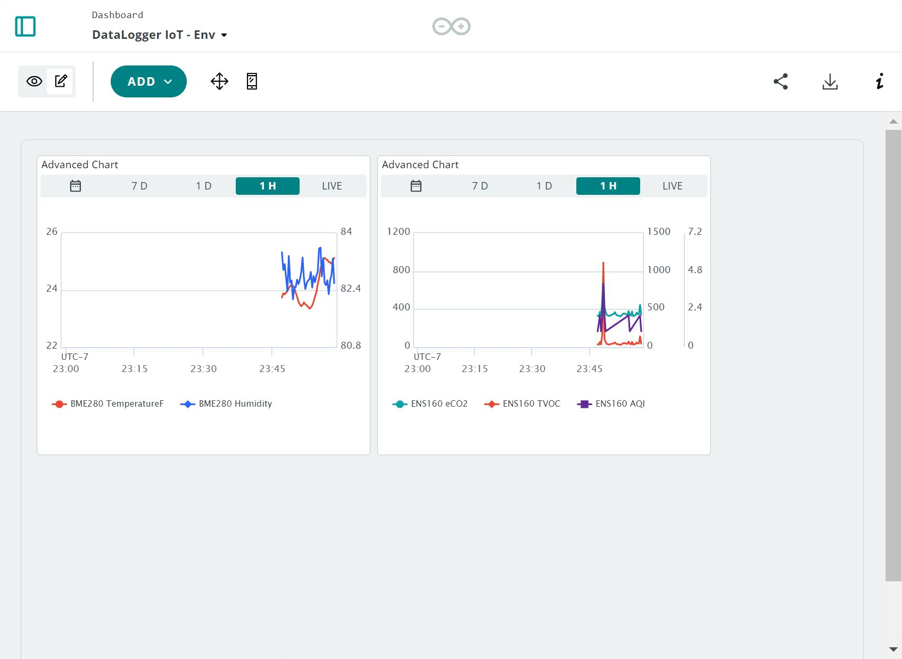
The DataLogger IoT Web Server
As of firmware v01.02.00, log files can be viewed and downloaded over a WiFi network! This saves you time by allowing you to download the files without the need to disconnect the DataLogger IoT and manually remove microSD card.
The following is covered by this document:
- How a user configures and uses the HTTP connection
- Use examples
IoT Web Server Connection Setup
To connect to the ESP32's IoT Web Server, the following information is needed:
- The server name/address
- [optional] A username - if required
- [optional] A password - if required
IoT Web Server Menu System
We'll need to adjust the settings for the IoT Web Server.
For users that are interested in using the menu system, open a Serial Terminal, connect to the COM port that your DataLogger enumerated to, and set it to 115200 baud. In this case, we connected to COM13. Press any key to enter the Main Menu. Type 1 to enter the Settings menu. Then select the IoT Web Server Menu. When the menu system for the IoT Web Server is presented, the following options are displayed:

The options are:
- Enable/Disable the connection
- Username
- Password
- Enable/Disable mDNS support
- mDNS name
At a minimum, you will just need to enable the connection. However, we recommend enabling mDNS support if it is supported in your network.
Once all these values are set, the system will serve the log files in your local 2.4GHz WiFi network following the JSON information structure noted below in this document.
JSON File Entries
If a JSON file is being used as an option to import settings into the DataLogger IoT, the following entries are used for the IoT web server:
"IoT Web Server": {
"Enabled": false,
"Username": "",
"Password": "",
"mDNS Support": false,
"mDNS Name": "dataloggerAD6B8"
},
Where:
Enabled- Set totrueto enable the connection.Username- Web server user name if being used.Password- Web server password if being used.mDNS Support- Set totrueif multicast DNS is supported. This allows you to enter the address as "http://dataloggerXXXXX.local" (whereXXXXXis generated from the last 5x characters from your board ID) rather than typing the exact IP address of the ESP32.mDNS Name- Multicast DNS name. In this case, the default name was set todataloggerAD6B8. This name will be different depending on your DataLogger IoT's board ID soAD6B8will be different for your board.
To load the values by the system at startup using a JSON file and microSD card, you will need to configure the Save Settings. This JSON file will be created with the "Save to Fallback" option. Make sure to enable the MQTT Client as well.
Connect and Download Log File
To use this feature, ou will need to make sure that the ESP32 is on the same network as your computer in order to access the log files. Addionally, when authentication is enabled, some browsers might require a second login depending on user settings.
Using a local server name
Once the web server is enabled and the settings are saved, you will need to reboot the DataLogger IoT. As the DatLogger initializes, it will connect to your WiFi Network. Take note of the mDNS address, in this case, it was "http://dataloggerAD6B8.local".

Once the DataLogger IoT has finished initializing, open web browser. Connect the DataLogger IoT by entering the address "http://dataloggerXXXXX.local", where XXXX is the last 5x characters of your board ID. You will be presented with the log files available on the microSD card. Click on a log file to download and save it to your computer.

Using the DataLogger IoT IP Address
If mDNS is not supported on your network, you can also enter the IP address of the Datalogger IoT into a web browser to view and download the log files. You can view the IP address when the DataLogger IoT is initializing. If you have administrative privileges to the WiFi Network, you can also view the IP address through your WiFi router as well.

Now that you have downloaded the log files, try graphing the data on a spreadsheet!
System Update
This sections outline methods to update the firmware on the DataLoggerIoT.
When this menu item is selected, the following menu is presented:

System Update Menu
The following functionality is available from this menu:
Functions
Device Restart
This option is used to restart the device. When selected, the user is prompted to validate the selection. If Y is entered, the device is restarted.
Factory Reset
A factory reset will move the boot firmware of the device to the firmware imaged installed at the factory and erase any on-board stored settings on the device. This is helpful if an update fails, or an update has issues that prevent proper operations.
When selected, the user is presented a prompt to continue. To launch a factory reset, the value of Y should be entered. To abort the update, enter n or press the Esc key.

When a Y is entered, the system performs the following:
- Set the boot image to the Factory installed firmware
- Erase any settings stored in the on-board flash memory
- Reboot the device
Once complete, the DataLoggerIoT is running the original firmware it shipped with. To update to a later version, the Firmware Update options of this menu are used.
Update Firmware - SD Card
This action enables the ability to update the onboard firmware to an image file contained an SD card. This user is presented a list of available firmware images files contained in root directory of the on-board SD card, and updates the board to the selected file.
To download the latest firmware and update through the microSD card, you will need to head to the GitHub repository containing the firmware. Select the firmware version and download.
Once downloaded, insert the microSD card into a card reader or USB adapter. Then move the files into the memory card's root directory. Below shows an image of v01.00.01 and v01.00.02 on a Windows OS.

Once the files are copied to the memory card, eject the microSD card from your computer. Insert the card back into the DataLogger IoT's microSD card socket. Connect the DataLogger IoT to your computer using a USB cable and bring up the DataLoggerIoT menu system and navigate to the System Update options.
To update from the SD card, select the Update Firmware - SD Card entry. The system will now list available firmware versions to update to.

Available Firmware Images on the SD Card
The system will search the root directory of the on-board SD card for available firmware files. The firmware files are selected using the following criteria:
- The file is contained in the root "/" folder of the SD card.
- The filename has a ".bin" extension.
- The filename starts with a specified name prefix. The prefix is optional and is set by the developers at SparkFun using this action.
Once a file is selected, the system new firmware is read off the SD card and written to the device. When complete, the system is restarted using the new firmware image.

Firmware Updating from SD Card
Update Firmware - OTA
This action enables the ability to update the onboard firmware to an image file contained on an update server, which is accessed via the WiFi network the system is connected to. This Over-The-Air (OTA) capability contacts the systems update server and searches for newer firmware (later version) for the specific board.
When this option is selected, the system will contact the update server and search for available upgrade firmware, selecting the latest version available. If a newer version is found, a prompt is presented to confirm the upgrade.

NOTE For the upgrade option to occur, a the system must be connected to a network and have access to the firmware OTA server.
Typing Y (or hitting enter) starts the update operation. As the firmware is downloaded, the percent complete status is updated. If connectivity fails during the download, the operation is halted and the update aborted.

Once the update file is downloaded, it is verified as being the correct file. Once verified, the system is rebooted and starts using the new firmware image. You will notice the firmware version change as the DataLogger IoT initializes.

If the Firmware is overwritten by an Arduino Sketch
Flashing an Arduino sketch to a DataLogger IoT board removes the ability for easy firmware updates and will require a full low-level flash of the latest software, which includes the bootloader and partition map for the device. These files are now provided as part of the DataLogger IoT firmware updates.
To perform this level of update, please view the Build and Update Instructions
MicroSD Card Setup
Not all microSD cards are created equal. The capacity, read/write speed, and format vary depending on the manufacturer. In order to log data to the microSD card, you will need to ensure that your memory card is formatted as FAT32. You can also use FAT16. If the memory card is formatted as a different memory card, the DataLogger IoT will not be able to recognize the microSD card.
Checking MicroSD Card Format
While you can simply insert the microSD card into your DataLogger IoT and start logging, there may be a chance that the it will not recognize the memory card due to the format.
Checking MicroSD Card Format - Windows
To check to see if it is the correct format on a Windows you could head to the drive, right click, and select Properties.

SD Card Properties Menu Entry on Windows
Once the properties are open, you should be able to tell what file system that the memory card uses. In this case, it was exFAT which is not compatible with the DataLogger IoT. You will need to reformat the memory card since it is not formatted as FAT32.

Format of exFat - Not Compatable
The format should be FAT32

FAT32 Format - Compatable with the DataLogger IoT
Checking MicroSD Card Format - macOS
To check to see if it is the correct format on a macOS, you could head to the drive on your desktop. Then right click, and select Get Info.

"Get Info" on MacOS
A window will pop up indicating the microSD card properties. Under General: > Format:, you should be able to tell what file system that the memory card uses. In this case, it was exFAT which is not compatible with the DataLogger IoT. You will need to reformat the memory card since it is not formatted as FAT32.

Showing Format as exFat
To reformat the drive, the built in Disk Utility application on macOS can be used. Once the SD Card is reformatted, the Get Info dialog will show:

FAT32 Format on macOS
Download Raspberry Pi Imager
There are a few methods and programs available to reformat your microSD card as a FAT32. We found it easier to use the Raspberry Pi Imager Tool. Of course, you will only be using the tool to erase the contents of the microSD card and formatting it as a FAT32 system. You will not actually flash any image to the memory card. Click on the button below to download the tool from the Raspberry Pi Foundation. It is supported on Windows, macOS, and Ubuntu for x86.
Formatting as FAT32 using the Raspberry Pi Imager
After downloading and installing the software, open the Raspberry Pi Imager.

Raspberry Pi Imager
Under "Operating System", select "Erase" to "format card as FAT32."

Select 'ERASE' for Operating System
Under "Storage", select the drive that the microSD card appeared as on your computer.

Storage is the SD Card
When ready, select "Write". After a few minutes, the microSD card should be formatted with FAT32.

Writing/Reformatting the SD Card
Once the memory card has finished formatting, eject the microSD from your computer. To check to see if the microSD card is formatted as FAT32, you can check its properties as explained earlier with your operating system.
Serial Terminals
The key to the setup and interactive operation of the the SparkFun DataLoggerIoT is a modern, interactive Serial Terminal program. Keyboard input and text output are required to be immdiate, to support the interactive menu system of the IoT DataLoggerIoT. Luckily a majority of serial terminal support interactive use. The notible exeception is the build in Arduino IDE Serial Monitor, which requires text to be entered and "submitted" or sent to the device. The Arduino Serial Monitor is not supported for interactive use by the DataLoggerIoT
Common Serial Terminal Software/Applications
There are plenty of free Serial Terminals out there to configure the DataLogger IoT.
Note
A serial terminal client that supports edit characters is required. Most if not all modern serial terminal programs will have the ability to support interactive edits. We have tested the DataLogger IoT with the Tera Term application, minicom command, and the screen command.
If this is the your first time using a terminal window, We recommend checking out the Serial Terminal Basics tutortial.
The above guides will show you how to open the correct port for the DataLogger IoT and how to set the baud rate to 115200 baud. You can change the DataLogger IoT's baud rate through the configuration menus too should you need to.
Arduino IDE Serial Monitor - Not Recommended
The Arduino IDE Serial Monitor is not intented for interacive user and should not be used with the DataLogger IoT. For users with an Arduino IDE, you could also use the Arduino Serial Monitor by setting the line ending to Newline. Users will also need to CTRL + Enter when sending any character to the DataLogger IoT. However, we recommend using one of the terminals mentioned earlier.
Software, Documentents and Posts
DataLogger IoT - 9DoF
{kind=link}
DataLogger IoT
{kind=link}
Software
GitHub Hardware Repo
SFE Showcase
Blog Posts
- IoT Platforms and Protocols
- Send Sensor Data to AWS All In Under 15 Minutes
- Extending the Reach of Data Logging
DataLogger IoT Supported Devices
The following lists the devices/boards supported by the DataLogger IoT boards. New drivers to support a device will be listed under the firmware version.
Version 1.5.0
- SparkFun Air Quality PM1/PM2.5/PM10 Sensor - BMV080 (Qwiic)
- SparkFun Spectral Sensor - AS7343 (Qwiic)
- SparkFun Soil Moisture Sensor - NON-qwiic version
- Log Analog Device/GPIO pin values
- Log text input from a Serial/UART Input device
Version 1.1.0
- SparkFun Indoor Air Quality Sensor - ENS160 (Qwiic)
- SparkFun Photoacoustic Spectroscopy CO2 Sensor - PASCO2V01 (Qwiic)
- SparkFun Human Presence and Motion Sensor - STHS34PF80 (Qwiic)
- SparkFun Tristimulus Color Sensor - OPT4048DTSR
- SparkFun Triad Spectroscopy Sensor - AS7265x
Version 1.0.0
- ACS37800 Power Meter
- SparkFun Qwiic 12 Bit ADC - 4 Channel (ADS1015)
- Qwiic PT100 - ADS122C04
- Qwiic Humidity AHT20
- SparkFun Grid-EYE Infrared Array Breakout - AMG8833 (Qwiic)
- SparkFun Pulse Oximeter and Heart Rate Sensor - MAX30101 & MAX32664 (Qwiic)
- SparkFun Atmospheric Sensor Breakout - BME280 (Qwiic)
- SparkFun Environmental Combo Breakout - CCS811/BME280 (Qwiic)
- SparkFun Environmental Sensor Breakout - BME680 (Qwiic)
- SparkFun Environmental Sensor - BME688 (Qwiic)
- SparkFun Pressure Sensor - BMP384 (Qwiic)
- SparkFun Pressure Sensor - BMP581 (Qwiic)
- SparkFun Qwiic Button
- SparkFun Air Velocity Sensor Breakout - FS3000-1015 (Qwiic)
- SparkFun Air Velocity Sensor Breakout - FS3000-1005 (Qwiic)
- SparkFun GPS-RTK2 Board - ZED-F9P (Qwiic)
- SparkFun GPS-RTK-SMA Breakout - ZED-F9P (Qwiic)
- SparkFun GPS-RTK Board - NEO-M8P-2 (Qwiic)
- SparkFun GPS Breakout - Chip Antenna, SAM-M8Q (Qwiic)
- SparkFun GPS Breakout - NEO-M9N, Chip Antenna (Qwiic)
- SparkFun GPS Breakout - ZOE-M8Q (Qwiic)
- SparkFun 6DoF IMU Breakout - ISM330DHCX (Qwiic) and on-board SPI 9DOF
- SparkFun 9DoF IMU Breakout - ISM330DHCX, MMC5983MA (Qwiic)
- Qwiic Pressure Sensor - LPS25HB
- Qwiic Fuel Gauge - MAX17048
- SparkFun Qwiic Thermocouple Amplifier - MCP9600 (PCC Connector)
- SparkFun Qwiic Thermocouple Amplifier - MCP9600 (Screw Terminals)
- SparkFun Qwiic MicroPressure Sensor
- SparkFun Micro Magnetometer - MMC5983MA (Qwiic) and on-board SPI 9DOF
- Pressure Sensor (Qwiic) - MS5637
- Qwiic Pressure/Humidity/Temp (PHT) Sensor - MS8607
- SparkFun Qwiic Scale - NAU7802
- SparkFun Real Time Clock Module - RV-8803 (Qwiic)
- CO Humidity and Temperature Sensor - SCD30
- CO Humidity and Temperature Sensor - SCD40 (Qwiic)
- SparkX Differential Pressure Sensor - SDP31 (Qwiic)
- Particle, VOC, Humidity, and Temperature Sensor - SEN54
- SparkFun Air Quality Sensor - SGP30 (Qwiic)
- SparkFun Air Quality Sensor - SGP40 (Qwiic)
- SparkFun Humidity Sensor Breakout - SHTC3 (Qwiic)
- SparkFun Qwiic Dynamic NFC/RFID Tag
- CO Sensor - STC31 (Qwiic)
- SparkFun Qwiic dToF Imager - TMF8821
- SparkFun Qwiic dToF Imager - TMF8820
- SparkFun High Precision Temperature Sensor - TMP117 (Qwiic)
- SparkFun Qwiic Twist - RGB Rotary Encoder Breakout
- SparkFun Proximity Sensor Breakout - 20cm, VCNL4040 (Qwiic)
- SparkFun UV Light Sensor Breakout - VEML6075 (Qwiic)
- Ambient Light Sensor - VEML7700 (Qwiic)
- SparkFun Distance Sensor Breakout - 4 Meter, VL53L1X (Qwiic)
- SparkFun Qwiic ToF Imager - VL53L5CX
Release Notes
SparkFun DataLogger IoT Firmware - Version 1.5
January 2026
New Features and Enhancements
New Device Support
Support for the following new SparkFun qwiic devices
- SparkFun Air Quality PM1/PM2.5/PM10 Sensor - BMV080 (Qwiic)
- SparkFun Spectral Sensor - AS7343 (Qwiic)
UART Data Logging
Connect an external uart/serial device to the DataLogger IoT board and any input recieved from that device is output within the current logging stream (Serial console, SD Card, IoT endpoint ...)
Log Values from an Analog Pin
Connect an anlog device/sensor to a specified DataLogger GPIO pin and the data value is written to the current log stream/output.
Support for the SparkFun Analog Soil Mosture Sensor
Connect the SparkFun Soil Moisture Sensor to the specified/selected (via menu system) GPIO pins of the DataLogger IoT board and the senor values are output to the output log stream.
Note - the qwiic Soil Moisture Sensor is not supported by the DataLogger IoT due to I2C bus incompatablity (i2c clock stretching)
Trigger Logging via Interrupt
When enabled, with an interrupt connected to a specified (in the menu system) DataLogger IoT GPIO pin, a logging event is triggered when the interrupt is fired.
Trigger Logging using the PPS signal from a GNSS device
When enabld and the GNSS device PPS signal is connected to a specified GPIO pin on the DataLogger IoT, a logging event is triggered when the PPS signal is sent.
General Improvements
- Fixed issues with the ISO8601 date formatting in the logging system
- Improved support for verbose logging via the menu system
- Fixed issue with epoch tick output values
- Can now add the log-event trigger source to the log-stream output.
And this new functionality is available today at the DataLogger repo as a beta release. The update is free, available as a file uploaded via an SD Card. Just select the System Update option within the DataLogger IoT menu system and select your desired upgrade option.
SparkFun DataLogger IoT Firmware - Version 1.2
April 15th, 2024
With the release of our version 1.2 software for our DataLogger IoT products, we continue to add additional functionally to the products capability, as well as fix a number of issues.
And with the release, we feel weve covered all aspects of a 1.1 release new functionality, feature enhancements, and a wide variety of bug fixes.
New Features and Enhancements
Log File Download via a Web Interface
To allow access to log files located on the DataLogger IoT device, without requiring the removal of the SD card, a new Web Interface is provided. Once enabled, you can browse the on-board log files of the DataLogger. Clicking on a a filename will download the file.
Currently file browse and download options are available, but we plan on expanding this feature in the future.
Additionally, this feature has the following options:
- mDNS functionality allowing you to set a network name for a device if mDNS is supported on your network
- Username/Password authentication for the web interface.
Note: For authentication use - currently some browsers might require a second login depending on settings.
Note
The datalogger requires restarting if the web interface is enabled
This feature is enabled in settings under the Preview heading.
Startup Command Menu and Delay
To allow start-up time configuration and delay, a Startup Menu was added to the system. Now, at startup a short menu is presented for a brief period, allowing modification of the startup options of the DataLogger.
Startup Menu options:
Pressing the highlighted letter while the menu is active, will change the behavior of the system. This change only affects the current system session.
The options include:
- 'n' - Normal startup
- 'a' - Disable I2C device auto load on startup
- 'l' - List the I2C devices supported. This device table is discarded after auto-load
- 'w' - Disable WiFi
- 's' - Disable preference restore during startup
In addition, the amount of time the menu is displayed is adjustable. This settings is on the Settings/Application Settings page, under the Advanced section.
Quick (!) Commands
The addition of a quick (!) command system that allows for the direct execution of commands directly from the serial console, bypassing the serial menu system.
An example of this is the display of the "about" page for the system. Normally this would require navigating the serial menu system. With the quick command system, entering the value of "!about" at the serial console will display the about page.
The following commands are supported:
| Command | Description |
|---|---|
| !about | Display the system about page |
| !clear-settings | Clear the on board system preferences with a yes/no prompt |
| !clear-settings-forced | Clear the on board system preferences with no prompt |
| !devices | List the currently connected devices |
| !factory-reset | Perform a factory reset - presents a Y/N prompt |
| !heap | Display the current system heap memory usage |
| !help | List the available quick commands |
| !json-settings | For setting the device settings via a serial connection. When this command is sent, the system expects to receive a JSON settings file |
| !log-now | Perform a log observation event |
| !log-rate | If log rate measurement is enabled, the current log rate is printed |
| !reset-device | Reset the device - erasing any saved settings and restarting the device |
| !reset-device-forced | Reset the device, but without a Y/N prompt |
| !restart | Restart the device |
| !restart-forced | Restart the device without a Y/N prompt |
| !save-settings | Save the current settings to on-board flash |
| !sdcard | Output the current SD card usage statistics |
| !systime | Output current system time |
| !uptime | The uptime of the device |
| !device-id | The ID for the device |
| !version | The version of the firmware |
| !wifi | Output current system WiFi state |
Log Data Rate
The DataLogger system can now measure the data logging rate. Once this feature is enabled, the system will monitor the time between log events. This value is averaged over the latest 10 log events.
System Info in the log stream
The system operational parameters can now be added to log stream. This is useful to monitor system resource uses over time, or just perform general debugging.
Currently the following information is provided:
- WiFi SSID
- WiFi RSSI
- Memory Heap free space in bytes
- SD Card free space in bytes
- Uptime in MS
Feature Improvements
In addition to the new functionality, we also took input from our customers (and our own use) to expand and enhance existing features. While a wide variety of small additions were made, a few notable additions include:
Serial Console - Value Display The serial console now shows the current setting value in the menu system. Previously this value was only show once that item was selected.
Serial Console Color Text highlighting and color were added to the serial console output. If your serial console application/command supports it, the menu system highlights key values. This setting is controlled in the Settings/Application Settings section of the settings menu.
Startup Messages Normally a verbose log of startup options and settings are displayed at system startup. The about of information is now controllable - with values of Normal, Compact, Disabled.
Improved Device Auto-Load A major update to the I2C auto-load device detection logic that improves device detection and address collision prevention.
General System Enhancements Internal system job dispatch subsystem update to increase performance throughput. Overall decrease in static and dynamic memory usage.
Bug Fixes
We also squashed a variety of defects in the firmware. Some of the more notable issued fixed in this release:
- Fixed issue with the LED display logic that caused a system crash if the log interval was less than 100ms
- Incorporate driver updates for greater NAU7802 device output value stability
- Incorporate driver update for the MMC5983MA device
In Summary
With the release of DataLogger IoT firmware version 1.2.0 we continue to enhance the capabilities of our DataLogger IoT line adding to our IOT service, supported devices as well as improving the overall quality of the system.
And this new functionality is available today at the DataLogger repo. The update is free, available as an over-the-air upgrade, or as a file uploaded via an SD Card. Just select the System Update option within the DataLogger IoT menu system and select your desired upgrade option.
SparkFun DataLogger Iot Firmware - Version 1.1
November 11th, 2023
Today were releasing the latest firmware update for our line of DataLogger IoT products. While weve released a services of small defect correct releases over the base 6 months, this release, officially version v1.01.00, is the first to include major new functionality.
And with the release, we feel weve covered all aspects of a 1.1 release new functionality, feature enhancements, and a wide variety of bug fixes.
New Feature Arduino IoT Cloud Connectivity
Being an IoT focused product, one of our goals is to enable easy access to leading IoT data services. With this in mind, for this release we worked closely with the Arduino Team to enabled easy access to the Arduino IoT Cloud directly from a DataLogger IoT Device.
Setup a device in the Arduino IoT Cloud, add the credentials to your DataLogger IoT and you have a IoT based dashboard up and running in minutes. Want to add an additional device to your dashboard add the device to the DataLogger IoT and the combined system automatically adds the additional data to the Arduino Cloud ready for use in your dashboard.
The above image shows data from a DataLogger IoT with an Environmental Combo attached to it and mapping data to a plot graphic on an Arduino IoT Cloud dashboard.
And like all DataLogger IoT functionality, no programming is required to produces these plots all settings are provided via the intuitive serial console menu interface or set via a settings JSON file.
With the combination of the DataLogger IoT, qwiic and Arduino IoT Cloud, creating a IoT dashboard is as easy as Plug-in, Connect, Plot!
New qwiic Sensor Board Support
The original release of the DataLogger IoT firmware supported around 50 SparkFun qwiic development boards and with this release weve added six boards additional qwiic boards.
Selecting from our recently added qwiic products as well as from the list of popular products, the release of version 1.1 adds support for the following qwiic development boards.
- SparkFun Indoor Air Quality Sensor - ENS160
- SparkFun Photoacoustic Spectroscopy CO2 Sensor - PASCO2V01
- SparkFun Human Presence and Motion Sensor - STHS34PF80
- SparkFun Tristimulus Color Sensor - OPT4048DTSR
- SparkFun Triad Spectroscopy Sensor - AS7265x
- SparkFun 6DoF IMU Breakout - BMI270
Like previously supported qwiic boards, the DataLogger IoT firmware automatically detects when a device is connected, making the new device automatically available to the logging, menu and IoT systems of the DataLogger IoT.
All these new sensors are great adds on their own, but the ENS160 has the additional feature of supporting temperature and humidity calibration inputs. Connect an BME280 or an SHTC3 qwiic board along with an ENS160, and the DataLogger automatically connects the two devices!
Feature Improvements
In addition to the new functionality, we also took input from our customers (and our own use) to expand and enhance existing features. While a wide variety of small additions were made, a few notable additions include:
Improved Reference Clock Management the internal logic was reviewed and improved. Additionally, time zone support was moved out of the NTP system, and into the overall clock management subsystem.
Internal JSON Buffer Limits The initial firmware had fixed sizes for the internal JSON data buffers used for saving settings and log data output. These values are now user settable in the settings menu. This allows for larger buffer support, as well as reducing the internal buffers to what you need.
Add Device IDs to the Device Names As you add more devices to a DataLogger, its difficult to match the device to the actual devices address. Addresses are now included in device listings and the option to include the address in the device name is now available.
Board Information in the Log Stream To improve identification of a data source within the data log stream, the Board Name and Board ID can now be added if desired. As part of this functionality, a configurable name is now available for each DataLogger IoT.
Bug Fixes
We also squashed a variety of defects in the firmware. Some of the more notable issued fixed in this release:
- Incorporated a fix in the RV8803 RTC Clock Arduino Library that resolved force ti* shifts based on time zone. This was a real nasty one to resolve!
- Improved runtime memory (ram) consumption
- Resolved issues with devices having the same name. Now the second device adds it* address to the name.
- Improvements to the Machinechat IoT driver
In Summary
With the release of DataLogger IoT firmware version 1.1.0 we continue to enhance the capabilities of our DataLogger IoT line adding to our IOT service, supported devices as well as improving the overall quality of the system.
And this new functionality is available today at the DataLogger repo. The update is free, available as an over-the-air upgrade, or as a file uploaded via an SD Card. Just select the System Update option within the DataLogger IoT menu system and select your desired upgrade option.
Suggested Reading
- If you aren't familiar with the Qwiic system, we recommend reading here for an overview.
- Accelerometer Basics
- Gyroscopes
- Qwiic 9DoF - ISM330DHCX, MMC5983MA Hookup Guide
- Serial Terminal Basics
- I2C Communication
- Single Cell LiPo Battery Care
Troubleshooting and Support
Support
If you need technical assistance and more information on a product that is not working as you expected, visit the SparkFun Community. The community forums are monitored by the SparkFun Technical Support Team and the SparkFun community as a whole.
Issues Connecting to IoT Service
Having trouble connecting your DataLogger IoT to an IoT service? Make sure to check your credentials and ensure that the configuration matches the IoT Service (such as your WiFi network, port, server, topic, certificates, keys, etc. to name a few). Make sure to also include the associated certificates and keys in the microSD card as well. You may see an output similar to the following errors below.
AWS IoT Error
The following error occurred when the DataLogger IoT was initializing with AWS.

In this case, the DataLogger IoT failed to connect to AWS IoT service because the port was using the default value that was saved: 1883. Ensure that the port is set to 8883 for your IoT service (e.g. AWS IoT, Azure, and ThingSpeak) and saved in persistent memory in order for the DataLogger IoT to successfully connect. As of firmware v01.00.04, the default is 8883.
ThinkSpeak IoT Error
The following error occurred when the DataLogger IoT was initializing with ThingSpeak.
[I] ThingSpeak MQTT: connecting to MQTT endpoint mqtt3.thingspeak.com:8883 .......[E] ThingSpeak MQTT: Connection Error [4]

In this case, the DataLogger IoT failed to connect to ThingSpeak service because the credentials were entered incorrectly. Ensure that the and saved in persistent memory in order for the DataLogger IoT to successfully connect.
Arduino Cloud Error 1
The following error was occurred when the DataLogger IoT was initializing with Arduino Cloud.
[W] ArduinoIoT - Thing Name not provided
.
.
.
[I] Arduino IoT: setup variables...[E] ArduinoIoT HTTP communication error [401] - token request
[E] Arduino IoT Cloud not available or account credentials incorrect

In this case, the DataLogger IoT failed to connect to the Arduino Cloud service because the credentials were incorrect. Ensure that the credentials (i.e. API client ID, API secret, device secret, device ID) are entered correctly and saved in persistent memory in order for the DataLogger IoT to successfully connect.
Arduino Cloud Error 2
The following error was occurred when the DataLogger IoT was initializing with Arduino Cloud.
[I] Arduino IoT: setup variables...[E] Arduino IoT: return code=400, failed to decode request body with content type "application/json": uuid: incorrect UUID length 37 in string "a111aaa1-1111-1111-1a1a-1a11111a1111\r"
In this case, the DataLogger IoT failed to connect to the Arduino Cloud service because the credentials were incorrect. The string was supposed to be the device ID. When copying and pasting the device ID from a PDF that was generated with the Arduino Cloud, a carriage return (\r) was also copied and entered in the serial terminal. By pasting the device ID into a text editor and then re-copying/pasting it into the serial terminal helped to ensure that the credentials were entered correctly.
NOTE The device ID in this example was a randomly generated string. You will need to check to make sure that your device matches the one that the Arduino Cloud generated specifically for your account.
Arduino Cloud Error 3
The following error was occurred when the DataLogger IoT was initializing with Arduino Cloud.
[I] Arduino IoT: setup variables...ArduinoIoTCloudTCP::handle_ConnectMqttBroker could not connect to mqtts-up.iot.arduino.cc:8884
ArduinoIoTCloudTCP::handle_ConnectMqttBroker 1 connection attempt at tick time 301939
ArduinoIoTCloudTCP::handle_ConnectMqttBroker could not connect to mqtts-up.iot.arduino.cc:8884
ArduinoIoTCloudTCP::handle_ConnectMqttBroker 2 connection attempt at tick time 307420
[E] Arduino IoT: No Arduino Thing ID provided. Enter ID, delete Thing (SparkFunThing1) on Cloud, or enter new Thing Name.
In this case, the DataLogger IoT failed to connect to the Arduino Cloud service because there was already a Thing that was created. By deleting the Thing in the Arduino Cloud, the DataLogger IoT was able to automatically create another Thing and setup the variables.
ThingSpeak Data Points Not Updating
If your DataLogger IoT is connected to ThingSpeak but you do not see any data, ensure that the device name matches the Qwiic device that is connect to the DataLogger IoT. For example, the DataLogger IoT and Qwiic-enabled ENS160 was able to connect to ThingSpeak as shown in the following image:

However, there were no data points in any of the graphs as shown on ThingSpeak:

If you head back into the configuration menu for the DataLogger's ThingSpeak channel, make sure that the <device name> matches the connected Qwiic device's name that was shown during initialization. In this case, the device that was loaded and detected was ENS160. Then add the channel ID before saving the system settings.

NOTE Only one device can be loaded per channel! ThingSpeak is not able graph two different devices in the same channel.
Head back to your ThingSpeak Channel to verify that data is being plotted on the graphs.

U-Blox Device Disappears when IoT DataLogger Initializes
If you have issues where a u-blox device that is connected via qwiic fails to connect a second time when the IoT DataLogger initializes, this is due to a bug in the firmware from an initial release. You may see an output similar to the following message and image shown below.

If you see the following output and the IoT DataLogger not loading your u-blox device, you will need to update the firmware to v01.00.03 and above. For more information, make sure to check out the tutorial on updating your IoT DataLogger's firmware.
Submitting an Issue or Suggestion
Support
If you need technical assistance and more information on a product that is not working as you expected, visit the SparkFun Community. The community forums are monitored by the SparkFun Technical Support Team and the SparkFun community as a whole.
Existing Issue
Spot something wrong? Please check the list of reported and fixed issues .  in this repository.
in this repository.
Discrepancies in the Documentation
All of this documentation can be modified by you! Please help us make it better.
- The documentation files for these pages are contained in the
docsfolder of the SparkFun DataLogger IoT repository.
Spot something wrong?
If a section of the documentation is incorrect, please open an issue and let us know.
Do you have a suggested correction?
- With a GitHub account, fork this repo
- Add your correction(s) or improvement(s) to the markdown file(s)
- File a pull request with your changes, and enjoy making the
wordsworldsworld a better place.- Once received, the documentation specialist will automatically be notified.
- We will review your suggested improvement(s) to make sure they are correct and fit within our documentation standards.
Problems in the Hardware Design
All of our designs are open-source! Please help us make it better.
- Our board design files are contained in the
Hardwarefolder of the SparkFun DataLogger IoT repository.
Does something not make sense?
If part of the design is confusing, please open an issue and let us know.
Did we forget to include an important function of the board?
Please keep in mind that we may intentionally exclude certain functions of the board to meet our product design requirements.
If part of the board's functionality is missing, please open an issue and file a feature request.
Do you wish to contribute directly to improving the board design?
- With a GitHub account, Fork this repo
- Add your design improvement(s)
- File a pull request with your changes, and enjoy making the
wordsworldsworld a better place.- Once received, the engineer in charge of the original design will automatically be notified.
- We will review your suggested improvement(s), if they are within our board design standards and meet our product design requirements, we will flag these changes for our next board revision. (Please note, that even if your suggestion is accepted, these changes may not be immediate. We may have to cycle through our current product inventory first.)
Contribute
Improve our Documentation
All of this documentation can be modified by you! Please help us make it better.
- These pages are contained in the
docsfolder of the SparkFun DataLogger IoT repository.
Submit a Correction
- Fork this repo
- Add your corrections or improvements to the markdown file
- File a pull request with your changes, and enjoy making the
wordsworldsworld a better place.- Once received, the documentation specialist will automatically be notified.
- We will review your suggested improvements to make sure they are correct and fit within our documentation standards.
Improve our Hardware Design
This hardware design is open-source! Please help us make it better.
- Our board design files are contained in the
Hardwarefolder of the SparkFun DataLogger IoT repository.
Submit a Design Improvement
- Fork this repo
- Add your design improvements
- File a pull request with your changes, and enjoy making the
wordsworldsworld a better place.- Once received, the engineer in charge of the original design will automatically be notified.
- We will review your suggested improvements, if they are within our board design standards and meet our product design requirements, we will flag these changes for our next board revision. (Please note, that even if your suggestion is accepted, these changes may not be immediate. We may have to cycle through our current product inventory first.)